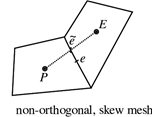
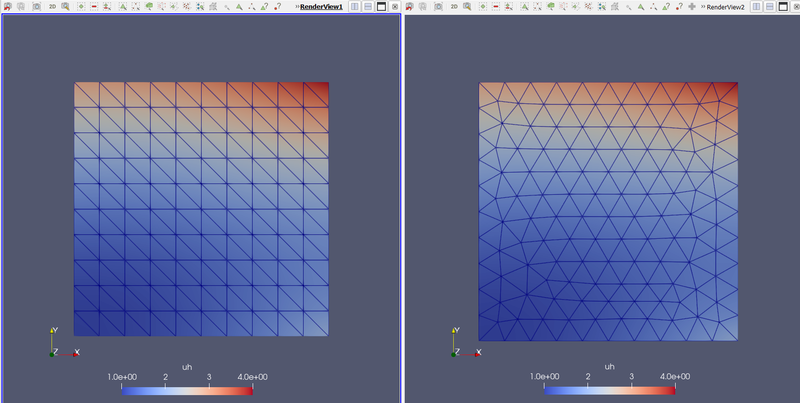
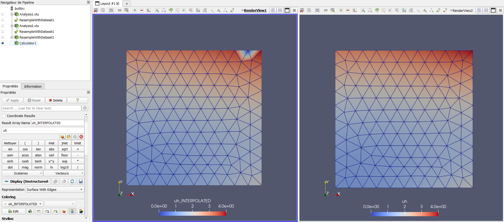
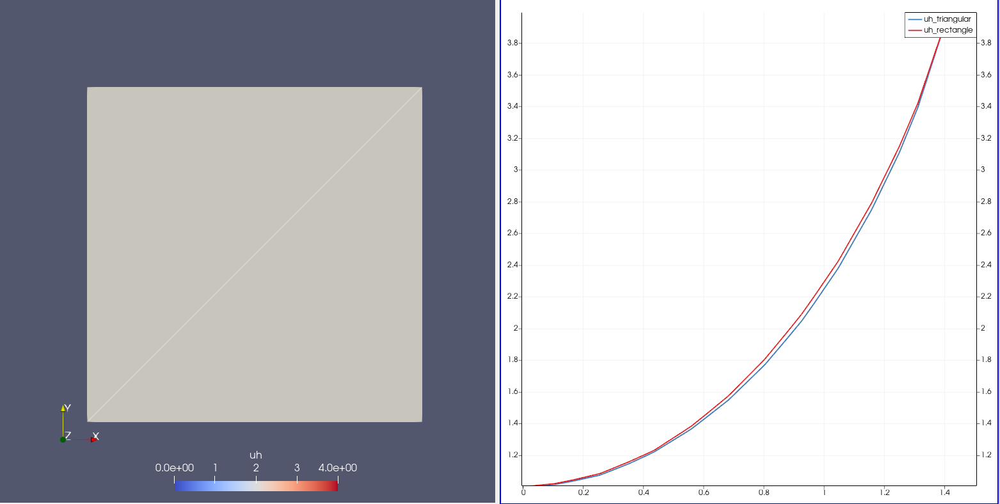

Preface
This handbook is intended to support a medium/advanced OpenFoam® user during the usage of the software. It provides commands, explanations, and extension that we find useful during our CFD workflow, and it is designed to be used by searching for keywords of an action you wish to perform within the OpenFoam® framework. This allows you to enrich or resolve the setting of a problem in the shortest possible time.
How to interpret the text:
| Structure | Meaning |
|---|---|
| Abc | Normal text |
Abc | Shell command |
<Abc> | User input required |
Installation location
The entire document will assume the installation has been performedunder the
/opt/OpenFOAM/ where there are stored the following files:
.
├── OpenFOAM-v2206
└── ThirdParty-v2206
Intro
OpenFOAM® is free and open-source software, hence everyone can contribute, modify and redistribute it. The two main distributions of OpenFOAM® actively developed are:
- OpenFOAM® from the OpenFOAM Foundation
- OpenFOAM® by OpenCFD Ltd
These are distributed through two differetn web sites, respectively at:
- https://www.openfoam.org
- https://www.openfoam.com
This book will cover OpenFOAM® by OpenCFD Ltd which does verison control with the following the nomenclature:
OpenFOAM-v2312
Which stands for years followed from the month, i.e. 23 stands for year 2023, while 12 for December. The release cicle occurs every 6 months.To check the version of OpenFOAM® run, once the sofware is already installed:
foamVersion
What`s the difference between the two main distributions of OpenFOAM®?
OpenFOAM® by OpenCFD Ltd contains more utilities and they optimise more the mesh generation fuctionality.
Installation
The installation of OpenFoam® is possible through three different methods:
- Installing the binaries and correlated [dynamic libraries] from a packages manager
- Downloading and extracting an pre-compiled package from the OpenFoam® websites
- Compiling from the source code
In this chapter only pre-compiled installation steps will be covered. For further information on the compilation process refer to the relative chapter - Compilation
Suggested location in the linux file system
If you do not use a package manger, you must choose where to install the software. It
is advised to create a /opt/OpenFOAM/ directory if you are not backed up by a package
manager to avoid mistakes during updates. You can create the directory following:
sudo mkdir -p /opt/OpenFOAM
Where /opt stands for Optional software on file system hierarchy.
Installation via package manger
This is the simplest method to install software in GNU-Linux, however not all GNU-Linux distributions can take advantage of this method. The following GNU-Linux distibution are supported:
- Debian/Ubuntu
- openSUSE
- CentOS/Fedora
To check the description of the package and the dependencies (other software needed to run OpenFoam®) the software needs:
# It shows the information about OpenFOAM® from the OpenFOAM Foundation
apt show openfoam
While to point to the package distributed by the OpenCFD Ltd we must install an additional repository.
# Add the repository
curl https://dl.openfoam.com/add-debian-repo.sh | sudo bash
# Show the info for OpenFOAM® by OpenCFD Ltd
apt show openfoam2206-default
Then install it with super user privileges the package
sudo apt install openfoam2206-default
Then set the binaries/environment variable on the user workspace.
echo "source /usr/lib/openfoam/openfoam2206/OpenFOAM-v2206/etc/bashrc" >> ~/.bashrc
After the installation, it makes the usage of the software more practical adding the tutorial functions to the user space in ~/.bashrc :
echo "source ${WM\_PROJECT\_DIR:?}/bin/tools/RunFunctions" >> ~/.bashrc
source ~/.bashrc
Precompiled binaries download
If the packages are not availble for your distribution, download the precompiled binaries instead:
wget https://dl.openfoam.com/source/v2206/OpenFOAM-v2206.tgz -P /opt/OpenFOAM
wget https://dl.openfoam.com/source/v2206/ThirdParty-v2206.tgz -P /opt/OpenFOAM
These command will download a .tar archive conatining the all necessary file to make the software working on the opt/OpenFOAM directory.
It is advised to use this directory if you are backed up by a package manager to avoid mistakes during future operations or updates.
Next step is to untar these archive with:
cd /opt/OpenFOAM
tar -xvf OpenFOAM-v2206.tgz
tar -xvf ThirdParty-v2206.tgz
Then set the binaries/environment variables on the user workspace:
echo "source /opt/OpenFOAM/OpenFOAM-v2206/etc/bashrc" >> ~/.bashrc
After the installation, it makes the usage of the software more practical adding the tutorial functions to the user space in ~/.bashrc :
echo "source ${WM\_PROJECT\_DIR:?}/bin/tools/RunFunctions" >> ~/.bashrc
source ~/.bashrc
Compiling source code
The source code must be compiled and then added to the execution path, in order to be used. The tool for the
job is wmake
wmake
wmake is a wrapper for make, to improve the compilation
experience. The binary is located at $WM_PROJECT_DIR/wmake.
Compiling the source code - x86 architecture (64 bit)
The source code is usually retrieved using git as follows:
git clone https://develop.openfoam.com/Development/openfoam.git /opt/OpenFOAM
git clone https://develop.openfoam.com/Development/ThirdParty-common.git /opt/OpenFOAM
The previous commands will install the source code and the buils scripts for
third party software in the declared installation directory (/otp/OpenFOAM).
Binaries, libraries, and configuration will be in the same directory.
They will not be separated into different locations as a traditional
UNIX like system would have them. To check if your system has an adequate
environment to start the compilation run:
echo "source /opt/OpenFOAM/OpenFOAM-v2212/etc/bashrc" >> ~/.bashrc
source ~/.bashrc
foamSystemCheck
If the system check did not produced error messages, then OpenFOAM® can
be compiled. This is done by executing the shell script Allwmake that wrap
the make utilities for automating the compilation.
./Allwmake
The installation script takes care of all required operations. Compiling OpenFOAM® can be done by using more than one processor to save time. In order to do this, an environment variable needs to be set before running the script to make the programme
export WM\_NCOMPPROCS = 4 ## This export an environment variable to run the compilation in 4 processors
./Allwmake > installation.log
Or you can directly use all the avilable cores (using the -j flag) to proceed with the compilation:
./Allwmake -j -s -q -l > installation.log
After the source code has been compiled, it makes the usage of the software more practical
adding the common usage binaries to the user space, appending the follwing to ~/.bashrc with:
echo "source ${WM\_PROJECT\_DIR:?}/bin/tools/RunFunctions" >> ~/.bashrc
source ~/.bashrc
OpenFoam® commands should now be recognized by the terminal.
Compiling the source code - ARM architecture
If the architecture of your machine differ from x86, you need to take few more steps. At first create
a file etc/prefs.sh in the software root directory as shown:
cd /opt/OpenFOAM/OpenFOAM-v2212
echo "WM\_COMPILER=Gcc" > etc/prefs.sh
Then you have to change two files:
./wmake/rules/linuxARM7Gcc/cOpt./wmake/rules/linuxARM7Gcc/c++Opt
Substituting the option -mfloat-abi from softfp into hard on the following file using piping:
ls ./wmake/rules/linuxARM7Gcc/cOpt ./wmake/rules/linuxARM7Gcc/c++Opt | xargs sed s/softfp/hard/g
Then set the binaries/environment variables on the user workspace and start the compilation:
echo "source /opt/OpenFOAM/OpenFOAM-v2212/etc/bashrc" >> ~/.bashrc
./Allwmake -j -s -l
Scheduling compilation (HPC environment)
In case of an HPC installation you can schedule the installation with a shell script similar to the following one:
#!/bin/bash
#SBATCH --job-name=OpenFOAM-compilation
#SBATCH --ntasks=36
#SBATCH --output=%x_%j.out
#SBATCH --partition=compute
#SBATCH --constraint=c5n.18xlarge
## -- Loading the env. variables, for putting in scope the mpi utilities -- #
module load openmpi
source /opt/OpenFOAM/OpenFOAM-v2212/etc/bashrc
export WM_NCOMPPROCS=36
cd /opt/OpenFOAM/OpenFOAM-v2212
./Allwmake > installation.log
This script uses 36 cores, correspondent to a 1 nodes of the HPC on study ("c5n.18xlarge") made by 36 cores each. The job should compile in few minutes. The location of the source code is different (than the advised location) because the software is installed on a shared file system for distribution purpose.
Usual problems
Several distribution may need some libraries, and correct callings to make the system working. To compile OpenFOAM, the shared library of an MPI implementation must be set in the exectution path:
export PATH=$PATH:/usr/lib64/openmpi/bin
source /usr/lib/openfoam/openfoam2312/etc/bashrc
Compile functionObjects
Once you are in possess of the source files (.c and .h) of the objectFunction.
A new directory must be added at $FOAM_SRC/functionObject/…/.
i.g. a Reynolds number custom functionObject files should be added in this plausible directory
$FOAM_SRC/functionObject/field/ReynoldsNo
Then compiler instruction must be added in this case in:
echo "ReynoldsNo/ReynodsNo.c" >> $FOAM_SRC/functionObjects/field/Make/files
Then run from parent directory of the application you have changed (i.e. $FOAM_SRC/functionObject/field in this case) the command
wmake
Case set up
The usual workflows to set up a case is to lay the foundation on similar tutorial. Hence, you need to select an appropriate solver for the problem, a way for listing the application areas is with:
ls $FOAM_SOLVERS
Once it is decided a solver, take a suitable tutorial case, copy it to your working directory.
mkdir -p $FOAM_RUN # if you do not have a working directory
cp -r $FOAM_TUTORIALS/<\tutorial\> $FOAM_RUN
Modify the tutorial, including geometry, meshing and problem setup is crucial and often you need to introduce a dictionary tat was not present in the original turotial file. The following utility will create the dictionary for you:
foamGetDict <\dictionary you want in your case\>
For instance:
foamGetDict topoSetDict
Automation
Being OpenFOAM® a heavily programmable software built in a heavy programmable system, there is the possiblity to automate most of your routine for the usual CFD workflow. Usually three action are taken to automate actions:
- run commands in sequence
- create custom commands
- create script to execute
Execute UNIX commands in sequence
The sequence of commands are a must to learn to be effective on the keyboard.
Command 2 (i.e. snappyHexMesh) will start only if command 1 (blockMesh) has succeeded:
blockMesh && snappyHexMesh
Using the colon ; permit to run command in sequence even if the precedent has failed.
blockMesh; snappyHexMesh
Piping commands using |. Feed the output of command 1 in command 2 as argument, as example:
ls | grep foo
where ls list the files/directory in the current directory and grep will retun the
a list of file which contain a the pattern foo in their name.
Create a custom command
To create a personalized command (alias), if you are using bash as a OS shell like in most of the UNIX like system, do:
echo "alias <\nameCommand\>=’<\list of command you want execute digiting
nameCommand\>" >> ~/.bashrc’
to write at the end of your shell config file the alias you prefer. For example, a useful alias which create a dummy file with the name of the directory and then open ParaView in series is declared as following:
alias paraview_openFoam ='touch "${PWD\#\#\*/}".foam && paraview "${PWD\#\#\*/}".foam
Shell scripting
These are script files, for running all the commands related to the
case. You can open it using any editor and see the commands executed from it.
Taking as example the native bash script often present in tutorial
cases Allrun and Allclean, the follwing command will execute them:
./Allrun
It will run all the command necessary to run the tutorial. While:
./Allclean
It will run all the command necessary to clean the tutorial.
Custom script
To write your shell script, start a new file with the notation:
#!/bin/bash
then followed by the command you want to execute. Elevate the file permission adding execution permission through
chmod +x shellScript.sh
For running your bash script, type:
./shellScript.sh
An example of a bash script to automate a thermal analysis is presented here:
#!/bin/bash
SLURM_NTASKS=16 # Processor number defined here
source ${WM_PROJECT_DIR:?}/bin/tools/RunFunctions # Source run functions
# Remove previous log directory for job monitoring and previous run file
./Allclean
rm -r log;
mkdir log
# Mesh generation
restore0Dir
surfaceFeatureExtract > ./log/surfaceFeatureExtract.log 2>&1 && echo "surfaceFeatureExtract Executed/n"
blockMesh > ./log/blockMesh.log 2>&1 && echo "blockMesh Executed"
decomposePar -force > ./log/decomposePar1.log 2>&1 && echo "decomposePar1 Executed"
mpirun -np $SLURM_NTASKS snappyHexMesh -parallel -overwrite > ./log/snappyHexMesh.log 2>&1 && echo "snappyHexMesh Executed"
# Addional mesh zones operation
reconstructParMesh -constant > ./log/reconstructParMesh1 2>&1 && echo "Reconstruct Case"
topoSet > ./log/topoSet && echo "topoSet Executed"
checkMesh > ./log/checkMesh.log 2>&1 && echo "checkMesh Executed"
decomposePar -force > ./log/decomposePar2 2>&1 && echo "decomposePar2 Executed"
mpirun -np $SLURM_NTASKS $(getApplication) -parallel > ./log/$(getApplication).log 2>&1 && echo "$(getApplication) Executed"
reconstructParMesh -constant -allRegions > ./log/reconstructParMesh.log 2>&1 && echo "Finished"
Parametric study
To develop a parametric study, hence you change one or more variables to get the consequent result
of this boudnary conditions change. You can use the sed command to drive the dictionary changes:
sed -i '/^[[:space:]]*massFlowRate/c\ massFlowRate 1000;' 0/U
This above command substitute the row that contain the word "massFlowRate" with the follwing: "massFlowRate 1000;". Creating a bash script to automate this practise will look similar to the following:
#!/bin/bash
SLURM_NTASKS=14
list_mass_flow_rate=(1.14E-04 2.29E-04 3.43E-04)
# Source run functions
source ${WM_PROJECT_DIR:?}/bin/tools/RunFunctions
rm -r log;
mkdir log
# Build the mesh
surfaceFeatureExtract > ./log/surfaceFeatureExtract.log 2>&1 && echo "surfaceFeatureExtract Executed/n"
blockMesh > ./log/blockMesh.log 2>&1 && echo "blockMesh Executed"
decomposePar -force > ./log/decomposePar1.log 2>&1 && echo "decomposePar1 Executed"
mpirun -np $SLURM_NTASKS snappyHexMesh -parallel -overwrite > ./log/snappyHexMesh.log 2>&1 && echo "snappyHexMesh Executed"
mpirun -np $SLURM_NTASKS checkMesh -parallel > ./log/checkMesh.log 2>&1 && echo "checkMesh Executed"
reconstructParMesh -constant > ./reconstructParMesh.log 2>&1 && echo "reconstructParMesh Executed"
for flowRateValue in "${list_mass_flow_rate[@]}"
do
rm -r process*;
# Modify the 0/U directory with a new value of massflow rate
sed -i "/^[[:space:]]*massFlowRate/c\ massFlowRate $flowRateValue ;" 0.orig/U && echo "Changed 0/U with $flowRateValue kg/s"
restore0Dir > ./log/restore0Dir.$flowRateValue.log 2>&1 && echo "restore0Dir $flowRateValue Executed"
decomposePar -force > ./log/decomposePar.$flowRateValue.log 2>&1 && echo "decomposePar $flowRateValue Executed"
mpirun -np $SLURM_NTASKS $(getApplication) -parallel > ./log/$(getApplication).$flowRateValue.log 2>&1 && echo "$(getApplication) $flowRateValue Executed"
reconstructPar -latestTime > ./log/reconstructParMesh.$flowRateValue.log 2>&1 && echo "reconstructPar $flowRateValue Executed"
# Take the newly created directory and re-name it as the flow rate
mv $(ls -1tr | tail -1) $flowRateValue
done
Find bugs
The utility shellcheck provide warnings and suggestions for bash/sh
shell scripts. Run the following for instant output:
shellcheck yourscript.sh
Useful command
A list comprised of a brief description of few usueful command is given.
grep
It will search word patterns for you in selected documents or a list of them
grep -w -R "foo"
where the -w flag stands for word while -R for research in subdirectories.
It will search all the file names that in which he finds a pattern (in this case:
foo).
mmv
Rename more than one file at once, extension included:
mmv '\*.STL' '\#1.stl'
tail
To check running simulation written in a log file, it is possible to see in terminal the live writing
tail -f foo.log
sed
For replacing the text repetitively in file stream:
find . -type f | xargs sed -i s/<oldWord>/<newWord>/g
The above chains of commands will change the content of every file that constains an
oldWorld pattern substituting it with newWord.
cp
A useful usage of the copy utility follows. for example, to copy a file in different directory, execute:
ls -d processor* | xargs -i cp -r 0.orig/* ./{}/0
find
To find the correct case frame in tutorial, follows simlar commands chain:
find $FOAM_TUTORIALS -type f | xargs grep -r <wordYouAreInterestedIn> # It will search in all tutorial files
find $FOAM_TUTORIALS -name controlDict | xargs grep -r <wordYouAreInterestedIn> # It will search in all controlDict files
Which list controlDict files where the word foo have been found
If you want to know how the continuity errors are computed use find in this way:
$FOAM_SRC –iname *continuity*
and open any of the files.
Mesh
Mesh in OpenFoam® can be generated using 3 native tools, a combination of those or translated from other programmes such as ANSYS, STAR-CCM ect with few native utilities.
The mesh generators are:
- blockMesh
- blockMesh + snappyHexMesh
- cfMesh
while the principal mesh converter are:
- fluent3DMeshToFoam
- fluentMeshToFoam
blockMesh
First step is to create a dummy folder with the tutorial command:
restore0Dir
blockMesh is a cartesian mesh generators which relies on a single
dictionary located at system/blockMeshDict. The programme starts
executing in terminal:
blockMesh
The mesh will be generated inside the folder constant/polyMesh.
Parameters to control this command is in system/blockMeshDict which
defines the domain through vertices, define the blocks and set the
number of elements in the segment.
Warning: Be consistent – side of different blocks must contain the same number on elements and bias. In blockMesh.boundary, use the rule of the right hand to create the normal to the surface towards the intern of the body.
An example is posted here from the tutorial /opt/OpenFOAM/OpenFOAM-v2206/tutorials/multiphase/interFoam/RAS/damBreak:
FoamFile
{
version 2.0;
format ascii;
class dictionary;
object blockMeshDict;
}
// * * * * * * * * * * * * * * * * * * * * * * * * * * * * * * * * * * * * * //
scale 0.146;
vertices
(
(0 0 0)
(2 0 0)
(2.16438 0 0)
(4 0 0)
(0 0.32876 0)
(2 0.32876 0)
(2.16438 0.32876 0)
(4 0.32876 0)
(0 4 0)
(2 4 0)
(2.16438 4 0)
(4 4 0)
(0 0 0.1)
(2 0 0.1)
(2.16438 0 0.1)
(4 0 0.1)
(0 0.32876 0.1)
(2 0.32876 0.1)
(2.16438 0.32876 0.1)
(4 0.32876 0.1)
(0 4 0.1)
(2 4 0.1)
(2.16438 4 0.1)
(4 4 0.1)
);
blocks
(
hex (0 1 5 4 12 13 17 16) (23 8 1) simpleGrading (1 1 1)
hex (2 3 7 6 14 15 19 18) (19 8 1) simpleGrading (1 1 1)
hex (4 5 9 8 16 17 21 20) (23 42 1) simpleGrading (1 1 1)
hex (5 6 10 9 17 18 22 21) (4 42 1) simpleGrading (1 1 1)
hex (6 7 11 10 18 19 23 22) (19 42 1) simpleGrading (1 1 1)
);
edges
(
);
boundary
(
leftWall
{
type wall;
faces
(
(0 12 16 4)
(4 16 20 8)
);
}
rightWall
{
type wall;
faces
(
(7 19 15 3)
(11 23 19 7)
);
}
lowerWall
{
type wall;
faces
(
(0 1 13 12)
(1 5 17 13)
(5 6 18 17)
(2 14 18 6)
(2 3 15 14)
);
}
atmosphere
{
type patch;
faces
(
(8 20 21 9)
(9 21 22 10)
(10 22 23 11)
);
}
);
mergePatchPairs
(
);
SnappyHexMesh
In order to define the patches with snappyHexMesh you need to use different files (in STL format, for compatability reasons, wrting in STL-ASCII format might be beneficial) that can assemble in a watertight shell geometry. Use the utility surfaceCheck to proof that your STL is watertight.
The files are suppoed to be stored in "constant/triSurface" rigorously
in this format <file>.stl and plus a description on "sytem/surfaceFeatureDict"
substituting and adding the entries and modifying the featured angles
(170°(advised) - 180°: to include all the angles between two neighboured
cells, lowering this value it wouldn’t be consider these cells and it
will be applied a merged cell).
How to start a case in single and parallel
After the execution of:
surfaceFeatureExtract
in "constant/triSurface" the same folder should appear <file>.eMesh and a new directory
will be generated as "constant/extendedFeatureEdgeMesh"
If you want to extract very thin layer, use the utility
extrudeMesh
dependent on the dictionary system/extrudeMeshDict to extrude some layers
externally to the geometry, however, make sure that those created are
very thin.
The following commands will start the meshing process:
| Single process | Parallel processes |
|---|---|
| snappyHexMesh -overwrite | decomposePar -force |
| mpirun -n 16 snappyHexMesh -parallel -overwrite | |
| reconstructParMesh -latestTime -constant |
Meshing multiples bodies
If you want to mesh different entities with separate mesh, you might run twice
snappyHexMesh with different value of Location in mesh and then use the tool mergeMesh.
Otherwise you can use the dictionary before running the mesh.
To permit the recognition of different closed STL files the
sub-dictionary "snappyHexMesh.castellatedMeshControls.locationInMesh" must
be modified in "snappyHexMesh.castellatedMeshControls.locationsInMesh" and
follow a similar resolution:
…
locationsInMesh
(
((0.010276 0.058958 0.000248) zone1)
((0.011472 0.10046 0.000256) zone2)
);
…
In this scenario, it is possible to introduce to bodies as a single mesh
without recurring to use the utility mergeMeshes. The bodies will be
distinguished from a different cellZones allocations.
Internal flow
To fix the boundary conditions, prepare watertight STL files as
inlet.stl, outlet.stl, ect. Then in system/snappyHexMeshDict.geometry define:
section
geometry
{
inlet.stl
{
type triSurfaceMesh; // It grabs STL files from constant/triSurface
name inlet;
}
outlet.stl
{
type triSurfaceMesh;
name outlet;
}
wall.stl
{
type triSurfaceMesh;
name wall;
}
}
While in the refinement surfaces section you can address the info of the patch:
refinementSurfaces
{
inlet
{
level (2 2);
patchInfo
{
type patch;
}
}
outlet
{
level (2 2);
patchInfo
{
type patch;
}
}
wall
{
level (2 2);
patchInfo
{
type wall;
}
}
}
Setting zones inside the mesh for source terms
Sets and Zones, can store any mesh entity (point, face or cell) in a data structure that is somewhat similar to a list. The major difference is in the internal handling of the mesh entities, especially in the case of a parallel simulation with topological mesh changes. In this case, the addressing in the list has to be updated accordingly and only the zone provides such a method (use cellZone for this purpose).
-
pointSet/faceSet/cellSet provide a named list of point/face/cell indexes. Essentially, it's just the result of a selection of points/faces/cells, so that you can then do something with them, since you know which ones you want. Usually, these sets are used for data sampling and for creating faceZones or cellZones
-
cellZone are an extension to the sets, since zones provide additional information useful for mesh manipulation. Zones are commonly used for MRF, baffles, dynamic meshes, porous mediums and other features available through the dictionary system/fvOptions
Sets can be used to create Zones and vice versa. As a reminder first create a cellSet and then fed the cell set into the creation of the cellZone to use fvOptions
The selection is usually performed by the tools, both of which can select subsets of the mesh and perform boolean operations on them
-
setSet → Use an interactive window
-
topoSet → Use a dictionary in
system/topoSetDict
Two example of topoSet are listed below:
The implementation of 2 cellZones from STL files:
FoamFile
{
version 2.0;
format ascii;
class dictionary;
location "system";
object topoSetDict;
}
// * * * * * * * * * * * * * * * * * * * * * * * * * * * * * * * * * * * * * //
actions
(
{
name HE_frontCellSet;
type cellSet;
action new;
source searchableSurfaceToCell;//surfaceToCell;
surfaceType triSurfaceMesh;
surfaceName HE_front.stl;
}
{
name HE_front;
type cellZoneSet;
action new; // new cellSet, it doesn't simply add to a previous cellSet
source setToCellZone;//zoneToCell;
set HE_frontCellSet;
}
{
name HE_frontLateralCellSet;
type cellSet;
action new;
source searchableSurfaceToCell;//surfaceToCell;
surfaceType triSurfaceMesh;
surfaceName HE_frontLateral.stl;
}
{
name HE_frontLateral;
type cellZoneSet;
action new; // new cellSet, it doesn't simply add to a previous cellSet
source setToCellZone;//zoneToCell;
set HE_frontLateralCellSet;
}
);
Implementation of cellZones and faceZones
FoamFile
{
version 2.0;
format ascii;
class dictionary;
location "system";
object topoSetDict;
}
// * * * * * * * * * * * * * * * * * * * * * * * * * * * * * * * * * * * * * //
actions
()
// FaceZones
{
name baffleSET;
type faceSet;
action new;
source surfaceToCell;
file copper.stl;
}
{
name baffle;
type faceZoneSet;
action new;
source setToFaceZone;
faceSet baffleSET;
}
// CellZones
{
name notPCB;
type cellSet;
action new;
source zoneToCell;
zones ( water air hydrogen);
}
{
name solid;
type cellSet;
action new;
source boxToCell;
box (-1 -1 -1) (1 1 1);
}
{
name solid;
type cellSet;
action subtract;
source cellToCell; // select all the cells from given cellSet(s).
set notPCB ;
}
{
name PCB;
type cellZoneSet;
action new;
source setToCellZone;
set solid ;
}
);
// ************************************************************************* //
Delete a zone
To visualize how much Cell Zone there is inside the domain run
checkMesh, while if you desire to delete a cellZone, delete the files
that topoSet creates in: constant/polyMesh/sets
Multiple regions
We can create regions from snappyHexMesh setting up "system/snappyHexMeshDict" like this:
castellatedMeshControls
{
maxLocalCells 300000;
maxGlobalCells 9000000;
minRefinementCells 40;
maxLoadUnbalance 0.1;
nCellsBetweenLevels 2;
locationsInMesh (
((0.144701 0.017648 -0.042372) aluminum)
((0.161481 0.009546 -0.0572022) fluid_domain)
((0.056485 0.023659 -0.018144) plates)
((0.105862 0.023659 -0.018144) plates)
((0.172814 0.023659 -0.018144) plates)
);
...
Following instead the follwoing "system/topoSetDict" we set cellZones around the domain
interacting with what has been implemented previously with snappyHexMesh
...
object topoSetDict;
}
actions
(
{
name epoxy_CellSet;
type cellSet; // cellSet is created
action new;
source searchableSurfaceToCell; // search from an a surface
surfaceType triSurfaceMesh; // which is defined by an stl file
surfaceName epoxy.stl;
}
{
name epoxy;
type cellZoneSet;
action new; // cellZone is created
source setToCellZone; // refer to the cellSet above
set epoxy_CellSet;
}
{
name copper_CellSet;
type cellSet;
action new;
source searchableSurfaceToCell;
surfaceType triSurfaceMesh;
surfaceName copper_heat_exchanger.stl;
}
{
name copper;
type cellZoneSet;
action new;
source setToCellZone;
set copper_CellSet;
}
{
name aluminum;
type cellZoneSet;
action subtract;
source zoneToCell;
zones (
copper
epoxy
plates
fluid_domain
);
}
)
if you run checkMesh you will notice the generation of multiple cellsZones such as:
Checking basic cellZone addressing...
CellZone Cells Points VolumeBoundingBox
aluminum 569510 835668 0.000254241 (-3.020417e-06 0 -0.07205508) (0.2200032 0.02058048 8.201096e-06)
fluid_domain 2113560 2629640 5.075231e-05 (-1.233849e-05 0.004437673 -0.062375) (0.2200123 0.02002402 -0.006539311)
plates 896580 1084860 1.09089e-05 (0.0145 0.02299985 -0.0655) (0.2055 0.02415002 -0.003498615)
epoxy 731605 946011 4.763413e-05 (0.00998581 0.02282949 -0.0670095) (0.2100142 0.0280409 -0.00191977)
copper 1516780 2095400 4.684542e-05 (0.009995011 0.01575065 -0.06700418) (0.210005 0.02305153 -0.001525676)
From there you can split the mesh for executing a multi region solver. For example a Conjugated Heat Transfer.
Advanced refinement technique
The necessity to refine area that sometimes require a complex shape can
be satisfied through the usage of an STL file as a cellZone entry.
First, define a closed STL file through "snappyHexMeshDict.geometry" then
use this frame in the respective snappyHexMeshDict sector:
...
refinementSurfaces
{
<closedSTLFileYouWantToRefine>
{
level (1 2);
cellZone <nameCellZone>;
faceZone <nameFaceZone>;
cellZoneInside inside;
}
…
refinementRegions
{
<closeSTLFileYouWantToRefine>
{
mode <mode>; // can be "distance" , "inside" or "outside"
levels ((0.000008 3));
}
}
...
cfMesh
CfMesh is a mesher which is integrate in OpenFOAM® such as SnappyHexMesh and it is possible to find the tutorial relatives to it in:
/opt/OpenFOAM/OpenFOAM-v2206/modules/cfmesh/tutorials
The modalities to create a mesh pass always through the creation of a .stl bodies as boundaries, i.e. create all different .stl file as surface (ASCII and divided per patch that you intend to apply a boundary condition)
cat body_1.stl body_2.stl body_N.stl >> combined.stl
To permit at the program to select different patches of the geometry, remember to check inside the combined file and ensure there is a space between the joint of the different STL files. To create the .fms file needed to run the cfMesh utilities (specific for OpenFoam®) run the following commands.
surfaceFeatureEdges –angle 15 combined.stl combined.fms
The flag angle permit to capture correctly sharp corner of
the geometry, the lower is set the more it will be precise and
computationally expensive, I found 15 being a good compromise, the
default is 45. Secondly, to set the boundary condition in the easiest
way, open the .fms file (the OpenFOAM® format) to change the type of
boundaries (wall, patch, empty) in the first rows. Then the following
modifications acts on the dictionary system/meshDict. Then to run the
cited dictionary type the command:
cartesianMesh
For command to run require that the directory system/meshDict contain
only the voice:
surfaceFile "…";
maxCellSize "…";
If you are not satisfied with the result, try to run these utilities to improve the results:
improveMeshQuality
checkMesh
checkMesh will check for:
- Mesh statistics
- Topology
- Geometry and mesh quality (bounding box, cell volumes, skewness, orthogonality, aspect ratio, and so on).
To check the most important parameters of the mesh, run the utilities without flags:
checkMesh
If checkMesh explicitly generates an error, this error field must be repaired. To check all the possible measurable parameters of the mesh (often an overkill utilities), and visualise all the fields, run:
checkMesh -allGeometry -allTopology -writeAllFields -writeSets vtk
Most of the time, it is impossible to get no errors when we look at all the mesh fields.
A more progmatic way, is to write the field when you encouter an important error,
so you can post-process via ParaView your mesh and check all the defective set of cells, faces
and/or points written to the constant/polyMesh/sets/ directory with the following flags
checkMesh -writeSets vtk
It will write Sets and cellZones.
Most important mesh parameters
Only few parameters between Settings and Topology must kept under control to
produce a sufficient output.
Settings
The most important parameters to keep under control when we deal with mesh genration are:
| Non orthogonality | Skewness | |
|---|---|---|
| Rapresentation |  |  |
| Limits | Not run a case if it is above 80 | Acceptable under 3 |
Then is very important to check minVolume (if it is negative, check the .stl files or setting)
Topology
To improve the quality of the mesh try to remove as much as possible tetrahedra and tet wedges.
Deletion of bad quality cells
You can delete bad cells if they are not in region of interest, if this
is the case, utilities such as setSet and subsetMesh can be
useful tools, otherwise it is strongly advised to re-mesh. Instead, deleting mesh
arbitrarely is usually done via this utilities.
setSet -constant
An internal command line will appear, and similar command can be used to manage bad cells present in your mesh (i.e. concave, underdetermined, zero volume cells), in the followng commands a zero-volume cells are treated:
# if you want to fix additional cells and with problematic faces you can (i.e. skew, concave, warp faces etc..)
cellSet c0 new cellToCell zeroVolumeCells any
cellSet c0 add faceToCell skewFaces any
cellSet c0 invert && quit
Once exited from the internal command line, execute the following command to overwrite the mesh
subSetMesh c0 -overwrite
ANSYS Meshing to OpenFoam®
OpenFoam® needs to read a mesh via file written in ASCII format, if it comes from another program. As a consequence to export a Fluent .msh file in ASCII format the shortest way (from ANSYS meshing) is:
File → Option → Meshing → Export → Format of input file (.msh)
Choose ASCII and then you can easily extract the file in ASCII format by exporting the mesh. Then move the produced file on the root directory of your case and run:
fluentMeshToFoam foo.msh
Remember that it is good practice check the boundary setting in
constant/polyMesh/boundary after a conversion
Directories’ structure
The following directories tree is a representation of a file arrangement for setting up an OpenFoam® case:
.
├── 0.orig → Initial value settings
│ ├── k → Turbulent kinetic energy
│ ├── nut → Turbutent kinematic viscosity
│ ├── omega → Specific rate of turbulent dissipation
│ ├── p → Pressure
│ └── U → Velocity
├── Allclean
├── Allrun
├── constant → Initial value settings
│ ├── transportProperties → Fluid properties
│ └── turbulenceProperties → Turbulence model selection
└── system → Settings
├── blockMeshDict → Dictionary for cartesian mesh generation
├── controlDict → Running time and I/O control
├── decomposeParDict → Dictionary to control the parallelization scheme
├── fvSchemes → Terms, scheme, numerical settings
├── fvSolution → Tolerance, algorithm and solver settings
├── snappyHexMeshDict → Dictionary for mesh generation (with snappyHexMesh)
└── surfaceFeatureExtractDict → Dictionary de facto needed for mesh generation (with snappyHexMesh)
You can change the problem settings on-the-fly during the calculation, on the dictionaries:
- controlDict
- fvSchemes
- fvSolution
As long as in system/controlDict the option is set as:
runTimeModifiable yes
before the calculation is instanciated.
0 (i.e. Boundary Conditions)
The BC works on the Patches which have been defined in the mesh and the guessing of the first value of the field pass through the voice
internal field
which can be filled with a uniform, but it could be changed in non-uniform if set values in system/setFieldsDict and then apply this change through setFields
Commmon types of boundary conditions:
The most common types of patches are:
fixedValue
Every face associated to the boundary is set to the conditions
zeroGradient
Matematically speaking it is a symmetry conditon hence it implements at the boundaries: \[ ∂ϕ ∕ ∂x = 0 \]
Where "x" is the space and ϕ is a field properties.
symmetryPlane
Applied to planar patches to represent a symmetry condition, equivalent to zeroGradient.
symmetryPatch
{
type symmetryPlane;
...
}
noSlip
It is a velocity condtion and it is equivalent to:
wallPatch
{
type fixedValue;
value 0;
}
empty
To set a 2D simulation
frontAndBack
{
type empty;
}
AMIcyclic
Impose a periodic BC when the patches in study have not the same mesh, it must be declared the nature of periodicity (rotational, translation). The separationVector must contain the distances between the 2 patches in study. It is advised to use a createPatchDict to modify the BC after snappy procedure of snappyHexMesh because can cause problems to the patches)
calculated
Calculate the value from its component in the field, this doesn’t work for transport quantities but only for variable define by a formulae (for instance nut)
totalPressure
which is a fixedValue condition calculated from p and U field
pressureInletOutletVelocity
Which applies a zeroGradient on all components, except where there is inflow, in this case a fixedValue condition is applied to the tangential component
inletOutlet
It is a zeroGradient condition when outwards, fixedValue when flow is inwards
{
type inletOutlet;
inletValue uniform (0 0 0); // value of the velocity
value uniform x; // value of the properties
}
Basically, inletOutlet is zero gradient unless the flow is inward in which case it is fixed value (inletValue). outletInlet is zero gradient if the flow is inward and fixed value (outletValue) if the flow is outward.
ε, ω, k
An estimation of the turbulent mainstream quantities should take place to have a stable solver.
Turbulent external flow approximations
External flows can be a bit tricky to approximate because it is hard to evaluate the flow downstream considering anything that could have affected the turbulence. This could be other objects, convection over land or the position of the domain in a boundary layer. A good technique for approximation turbulence is by using the Turbulent Viscosity Ratio—the ratio between molecular viscosity and turbulent viscosity. This ratio can be used along with the Turbulence Intensity, freestream velocity and molecular viscosity to determine k, ε and ω using the following technique. To start the calculation, the Turbulent Intensity I, and Viscosity Ratio β need to be approximated by using the table below.
| Turbulence | Reynolds number | Turbulent Intensity |
|---|---|---|
| Low turbulence | 3000 < Re < 5000 | 1% |
| Med turbulence | 5000 < Re < 15000 | 1-5% |
| High turbulence | 15000 < Re < 20000 | 5-20% |
| High turbulence | Re > 100000 | 5-20% |
To calculate k, the following equation can be used:
\[ k = \frac{3}{2}\left( \text{UI} \right)^{2} \]
\[ ε = C_{\mu}\frac{\text{ρk}^{2}}{\mu}β ^{- 1}\ \]
\[ ω = \frac{ρk}{\mu}\ β^{-1}\ \]
Turbulent internal flow approximations
For a fully developed inlet flow, approximating turbulent boundary conditions can be extrapolated using the Reynolds number Re to determine the turbulent intensity I to define the intensity length scale l, the required turbulent boundary conditions can be calculated.
\[ I = 0.16 \ Re_L ^{-1/8} \]
This can be used to calculate a mean approximation for the turbulent boundary conditions
\[ k = \frac{3}{2} U I^{2} \]
\[ ε = C_{\mu}\frac{k^{\frac{3}{2}}}{l} = C_{\mu}\frac{k^{\frac{3}{2}}}{0.07L} \]
\[ ω = \frac{\varepsilon}{kC_{\mu}}\ \]
Turbulent Wall functions
Keeping the focus only in the treatment of the wall, the corresponding wall functions exist:
- εWallFuncion for ε( (fixed value e=0 or better e=1e-8(?) for lowRe calculations):
calculate (for each timestep) the first grid point value by using an algebraic expression derived from the classical logarithmic law-of the wall approach
- kqRWallFunction for k, q, R
in code: Boundary condition for turbulence k, Q, and R when using wall functions. Simply acts as a zero-gradient condition. It appears to be applicable down to yPlus ~ 1, but one should use a fixed value with k=0 or a very small value for y+ <1)
\ omegaWallFunction for omega; Not really a wall function but the b.c. defined by Menter for Omega, i.e. should be used always for kOmega model, independent of y+)
omegawall=60*nu/(β *y+2), with nu=kinematic viscosity at the wall, β =0.075 and y+normal distance between the first fluid node and the nearest wall-> very large value for omega)
The "value" which is specified for the wall functions is only an initial condition
nut - \( ν_{t} \)
The entries for \( ν_{t} \) are type calculated because they come from ε and k to calculate the field. Instead in the wall, you specify a wall function for \( ν_{t} \), to modify the momentum equation for the cells adjacent to the wall. The modification is that OpenFoam® calculates wall shear stress from log-law for these cells and put it in their equations. OpenFoam® does not use log-law directly to obtain next-to-the-wall cell velocities but solves their equation in which the stress term is modified using log-law.
Turbulent viscosity wall functions
The choice of wall function model is specified through the turbulent viscosity field \( ν_{t} \) in the 0/nut dictionary by the nutxxxxxx wall functions:
-
nutWallFunction seems to be the most basic wall function without further requirements: high-Re wall-function based on k.
-
nutkWallFunction standard for k-ε/k-ω, it calculates the turbulent viscosity in the first node point based on the logarithmic law based on the k value close to the wall
-
nutUWallFunction: in comparison to nutkWallFunction it calculates the y+sup>+ yPlus value based on the velocity close to the wall
-
nutUSpaldingWallFunction standard wall function for the Spallart Allmarras turbulence model, called nutSpalartAllmarasWallFunction, continuous wall-function which should cover the complete y+ range from O(1) to somewhere of O(10). Might be the best choice (together with low Re k-ε, k-ω, or SA, when y+ varies for different parts of the wall.
-
nutLowReWallFunction (code comment: "Sets \( ν_{t} \) to zero and provides an access function to calculate y+."):
Constant
The "constant" directory represent all the constant parameters of the CFD case such as mesh, immutable fluid properties, physical model.
├── polyMesh
│ ├──...
│ └──...
├── transportProperties
├── ...
└── turbulentProperties
transportProperties
nu is the kinematic viscositym, follows the value of the air at given temperature:
\begin{equation}
\nu_{\text{air}} = \frac{\mu}{\rho} = 1.48 \times 10^{- 5}\ \frac{m^{2}}{s}
\end{equation}
turbulentProperties
The current dictionary act as the selector for the turbulence model. Consequent quanitie must be updated or introduced given the model you of turbulence you want to solve.
RANS model (Reynolds Average Navier Stokes)
Usually three models are used and they can be specified in this way on constant/turbulenceProperties:
simulationType RAS;
RAS
{
RASModel kOmegaSST; // or kEpsilon, kOmega, etc
turbulence on;
printCoeffs on;
}
polyMesh
Contains all the mesh details as:
Sets
A set is an ordered part of the mesh (often a portion of the domain), usually produced by the
utilities: checkMesh,topoSet or setSet
Diversifying the output between:
- pointZone
- faceZone
- cellZone
Boundary
Each patch can be put inGroups for pre and post-processing purpose. Each patch can thus be in several groups. The patchGroup generated by this makes e.g. setting of boundary conditions easier. A patch boundary condition definition takes precedence over a patchGroup boundary condition.
Thermophysical model
The thermophysicalProperties dictionary is read by any solver that uses the thermophysical model library.
Types of thermo class
- hePsiThermo: General thermophysical model calculation based on compressibility ψ = 1/(RT) - Only gas
- heRhoThermo: General thermophysical model calculation based on density ρ. Gas, liquid, solids
- heSolidThermo: Only solids
System
The system directory contains all the setting relative to the case.
controlDict
The time from where simulation starts (startFrom), the time when the simulation finishes (stopAt), the time step (deltaT), the data saving interval (writeInterval), the saved data file format (writeFormat), the saved file data precision (writePrecision), and if changing the files during the run can affect the run or not (runTimeModifiable) are set in this file.
Note: If the write format is ASCII, then the simulation data which is written to the file can be opened and read using any text editor. If the format is binary, the data will be written in binary style and is not readable by text editors. The advantage of binary over ASCII is the smaller file size, and consequently faster conversion and writing to disk, for big simulations.
A simple example of a controlDict is display below:
FoamFile
{
version 2.0;
format ascii;
class dictionary;
location "system";
object controlDict;
}
// * * * * * * * * * * * * * * * * * * * * * * * * * * * * * * * * * * * * * //
application simpleFoam;
startFrom latestTime;
startTime 0;
stopAt endTime;
endTime 1000;
deltaT 1;
writeControl timeStep;
writeInterval 100;
purgeWrite 0;
writeFormat binary;
writePrecision 6;
writeCompression off;
timeFormat general;
timePrecision 6;
graphFormat raw; // (raw is default)
runTimeModifiable true;
functions
{
#include "yPlus"
}
fvSchemes
Contains the instructions to discretize the problem’s
equations. This settings can be changed on run time, however it is required
to set the field controlDict.runTimeModifiable equal to ``yes``` in the "system/controlDict". In fact, different discretization procedures suit different mesh
refinement/quality and state of simulation.
| Main document keywords | Category of mathematical terms |
|---|---|
| ddtScheme | First and second time derivatives - ∂∕∂t , ∂2∕∂t2 |
| gradSchemes | Gradient - ∇ |
| divSchemes | Divergence - ∇ ∙ |
| laplacianSchemes | Laplacian - ∇2 |
| interpolationSchemes | Point-to-point interpolations of values |
| snGradSchemes | Component of gradient normal to a cell face |
This schemas defines how you case must be compueted.
gradScheme
This dictionary field tackles the gradient computation in 3 aspects, how to define the compute (scheme), its interpolation and its limitation, with this arrangement:
gradSchemes
{
default none;
grad(p) <optional limiter> <gradient scheme> <interpolation scheme>;
}
The gradients can be computed using two schemes.The keywords are:
GaussleastSquares
The leastSquares method is more accurate, however, it tends to be more oscillatory on tetrahedral meshes. The interpolation can be executed with the following methods:
linear: cell-based linearpointLinearpoint-based linearleastSquares: Least squares
On the other side, gradient limiters will avoid over and under shoots on the gradient computations. They increase the stability of the method but add diffusion due to clipping. There are four available:
cellMDLimitedcellLimitedfaceMDLimitedfaceLimited
They are in descendent order of accuracy. faceLimited is the more diffusive one, however it provides stability.
The gradient limiter implementation uses a blending factor
gradSchemes
{
// <limiter> <gradient scheme> <interpolation scheme>
default cellMDLimited Gauss linear 1 // the blending factor is 1
}
where 0 means no blending hence the solution will be accurate but less stable. Of course 1 will introduce the maximum blending possible.
divSchemes
Relates to the evaluation of divergence across cell faces which usually transport a property Θ under the influence of velocity field φ (phi). The schemes are all based on Gauss integration, using the flux φ and the advected field being interpolated to the cell faces by one of the selected schemes.
These are the convective discretization schemes that you will use most of the times:
-
Gauss upwind→ first order accurate. -
Gauss linearUpwind grad(<Θ>)→ second order accurate, bounded. -
Gauss limitedLinear→ TVD scheme, second order accurate, bounded. Recommended for LES simulations. -
Gauss linear→ linear interpolation, unbounded.
Gauss indicates that derivatives are evaluated via the Gauss’ theorem. While upwind indicates a
standard 1st order upwind interpolation (bounded). First order methods are bounded and stable but diffusive.
Second order methods are accurate, but they might become oscillatory, the most common method to use is
``linearUpwind```, which stands for standard 2nd order interpolation (unbounded). TVD methods such as superBee,
minmod and vanLeer are second order accurate (bounded). TVD methods switch locally to upwind when they detect strong gradients. For the discretization of the diffusive terms instead, you can use a fully orthogonal scheme:
- linear corrected
- linear limited
0 for bad mesh and 1 for good quality mesh. An accurate and stable numerical scheme (second order accurate) would look like:
divSchemes
{
div(phi,U) Gauss linearUpwind grad(U);
div(phi,omega) Gauss linearUpwind grad(omega);
div(phi,k) Gauss linearUpwind grad(omega);
div((nuEff*dev2(T(grad(U))))) Gauss linear;
}
laplacianSchemes
For the discretization of the diffusive terms, you can use a fully orthogonal scheme
laplacianSchemes
{
default Gauss linear corrected;
}
You can also use a scheme that uses a blending between a fully orthogonal scheme and a non-orthogonal scheme:
laplacianSchemes
{
default Gauss linear limited 1
}
In summary, by setting the blending factor equal to 0 is equivalent to using the uncorrected method. You give up accuracy but gain stability. If you set the blending factor to 0.5, you get the best of both worlds. In this case, the non-orthogonal contribution does not exceed the orthogonal part. You give up accuracy but gain stability. For meshes with non-orthogonality less than 70, set the blending factor to 1. For meshes with non-orthogonality between 70 and 85, set the blending factor to 0.5. For meshes with non-orthogonality more than 85, it is better to get a better mesh. But if you definitely want to use that mesh, set the blending factor to 0.333, and increase the number of non-orthogonal corrections.
Discretization schemes example
Few examples are proposed here for different quality thresholds.
Non-orthogonality between 70 and 85
gradSchemes
{
default cellLimited Gauss linear 0.5;
grad(U) cellLimited Gauss linear 1.0;
}
divSchemes
{
div(phi,U) Gauss linearUpwind grad(U);
div(phi,omega) Gauss linearUpwind default;
div(phi,k) Gauss linearUpwind default;
div((nuEff*dev(T(grad(U))))) Gauss linear;
}
laplacianSchemes
{
default Gauss linear limited 0.5;
}
snGradSchemes
{
default limited 0.5;
}
Non-orthogonality between 60 and 70
gradSchemes
{
default cellMDLimited Gauss linear 0.5;
grad(U) cellMDLimited Gauss linear 0.5;
}
divSchemes
{
div(phi,U) Gauss linearUpwind grad(U);
div(phi,omega) Gauss linearUpwind default;
div(phi,k) Gauss linearUpwind default;
div((nuEff*dev(T(grad(U))))) Gauss linear;
}
laplacianSchemes
{
default Gauss linear limited 0.777;
}
snGradSchemes
{
default limited 0.777;
}
Non-orthogonality between 40 and 60
gradSchemes
{
default cellMDLimited Gauss linear 0;
grad(U) cellMDLimited Gauss linear 0.333;
}
divSchemes
{
div(phi,U) Gauss linearUpwind grad(U);
div(phi,omega) Gauss linearUpwind default;
div(phi,k) Gauss linearUpwind default;
div((nuEff*dev(T(grad(U))))) Gauss linear;
}
laplacianSchemes
{
default Gauss linear limited 1.0;
}
snGradSchemes
{
default limited 1.0;
}
fvSolution
The dictionary is divided in 3 parts:
- linear-solver
- solver
- under-relaxation factor
Linear solver control
Linear solvers are a sets of algorithms to solve the following linear problems in matrix form:
\begin{equation} \tag{1} Ax=b \end{equation}
The solver is said to have found a solution if any one of the following conditions are reached:
-
toleranceDefine the exit criterion for the solver, it is the absolute difference between 2 consecutive iterations and must be low in steady state while coarser in transient simulation -
relTolDefine the exit criterion for the solver, on a relative difference of solution from 2 consecutive iteration (i.e. 0.1 is 10%) -
maxIterA maximum number of iterations at which the solver is stopped anyway 1000 as default
The solvers controls can be modified on the fly (when a simulation is running).
Diagonal solver
If the matix coefficients have non-zeros values on its diagonal, therefore a set of explicit equations. The solution vector can be obtained inverting the stiffness matrix without incurring in relevant computational effort:
diagonal: a diagonal solver for explicit systems.
where:
\begin{equation} \tag{2} x = A^{-1}b \end{equation}
Where the inverse of the diagonal matrix is simply:
\begin{equation} \tag{2} A^{-1}= \frac{1}{diagonal(A)} \end{equation}
Direct solvers
The following algoritms are direct methods, or method based on Gaussian elimination:
smoothSolver: Solver that uses a smoother.
The solvers that use a smoother require the choice of smoother to be specified as follow
GaussSeidelGauss-Seidel.symGaussSeidelsymmetric Gauss-Seidel.DIC/DILUincomplete-Cholesky (symmetric), incomplete-LU (asymmetric).DICGaussSeideldiagonal incomplete-Cholesky/LU with Gauss-Seidel (symmetric/asymmetric).
When using the smooth solvers, the user can optionally specify the number of sweeps, by the nSweeps
keyword, before the residual is recalculated. Without setting it, it reverts to a default value of 1.
The usage is reported below:
solver smooth;
smoother <smoother>;
relTol <relative tolerance>;
tolerance <absolute tolerance>;
Iterative solver (Minimization algorithms)
They are solver that start from a guess and they iteratively correct up to the respect of the equations of the system:
PCG/PBiCG: Preconditioned (bi-)Conjugate Gradient, with PCG for symmetric matrices, PBiCG for asymmetric matrices.PBiCGStab: Stabilised preconditioned (bi-)conjugate gradient, for both symmetric and asymmetric matrices.GAMG: Generalised Geometric-Algebraic Multi-Grid.
The GAMG solver can often be the optimal choice for solving the pressure equation.
Preconditioners are useful in iterative methods to solve a linear system since the rate of convergence for most iterative linear solvers increases because the condition number of a matrix decreases as a result of preconditioning. Preconditioned iterative solvers typically outperform direct solvers, e.g., Gaussian elimination, for large, especially for sparse, matrices.
Preconditioners
Preconditioning is typically related to reducing a condition number of the problem, via the application of a matrix transformation. The preconditioned problem is then usually solved by an iterative method. There are a range of options for preconditioning matrices:
DIC/DILU: diagonal incomplete-Cholesky (symmetric) and incomplete-LU (asymmetric)FDIC: faster diagonal incomplete-Cholesky (DIC with caching, symmetric)GAMG: geometric-algebraic multi-grid.diagonal: diagonal preconditioning, not generally usednone: no preconditioning.
The pressure equation resolution usage is shown:
p
{
solver PCG;
preconditioner DIC;
tolerance 1e-06;
relTol 0.05;
}
pFinal
{
$p;
relTol 0;
}
Solver (coupling equations)
Whatever solver you use from above adopt a specific set of sequential algorithm such as semi-implicit method for pressure-linked equations (SIMPLE), pressure-implicit split-operator (PISO) or PIMPLE. These sequential algorithms are iterative procedures for coupling equations for momentum and mass conservation, PISO and PIMPLE being used for transient problems and SIMPLE for steady-state.
All the algorithms solve the same governing equations, they differ in how they loop over the equations. The looping is controlled by input parameters that are listed below. They are set in a dictionary named after the algorithm:
-
nNonOrthogonalCorrectors: used by all algorithms, specifies repeated solutions of the pressure equation, used to update the explicit non-orthogonal correction of the Laplacian term; typically set to 0 (particularly for steady-state) or 1. -
nCorrectors: used by PISO, and PIMPLE, sets the number of times the algorithm solves the pressure equation and momentum corrector in each step; typically set to 2 or 3. -
nOuterCorrectors: used by PIMPLE, it enables looping over the entire system of equations within on time step, representing the total number of times the system is solved; must be and is typically set to 1, replicating the PISO algorithm. -
momentumPredictorswitch those controls solving of the momentum predictor; typically set to off for some flows, including low Reynolds number and multiphase.
SIMPLE solvers practice
For the pressure equation:
p
{
solver GAMG;
tolerance 1e-6;
relTol 0.01;
nPreSweeps 0;
nPostSweeps 2;
cacheAgglomeration on;
agglomerator faceAreaPair;
nCellsInCoarsestLevel 1000;
mergeLevels 1;
}
After a while it should be good practice to lower the relative tollerance to relTol: 0.0 to let mamage
the tolerance as an absolute criteria. While for the velocity:
U
{
solver GAMG;
smoother <smoother>;
tolerance 1e-6;
relTol 0.0;
nPreSweeps 0;
nPostSweeps 2;
cacheAgglomeration on;
agglomerator faceAreaPair;
nCellsInCoarsestLevel 1000;
mergeLevels 1;
}
PISO & PIMPLE solvers practice
You must do at least one corrector step when using PISO solvers.
When you use the PISO and PIMPLE solvers, you also have the option to set the
tolerance for the final corrector step (*Final).
By proceeding in this way, you can put all the computational effort only in the last
corrector step (*Final).
p
{
solver GAMG;
smoother <smoother>;
tolerance 1e-04;
relTol 0.01;
nPreSweeps 0;
nPostSweeps 2;
cacheAgglomeration on;
agglomerator faceAreaPair;
nCellsInCoarsestLevel 1000;
mergeLevels 1;
}
pFinal
{
solver GAMG;
smoother <smoother>;
tolerance 1e-06;
relTol 0.0;
nPreSweeps 0;
nPostSweeps 2;
cacheAgglomeration on;
agglomerator faceAreaPair;
nCellsInCoarsestLevel 1000;
mergeLevels 1;
}
Addtional notes
Set to yes the momentumPredictor for high Reynolds flows, where convection dominates:
momentumPredictor yes;
Recommended value is 1 (equivalent to PISO). Increase to improve the stability of second order time discretization schemes (LES simulations). Increase for strongly coupled problems.
nOuterCorrectors 1;
Recommended to use at least 3 correctors. It improves accuracy and stability. Use 4 or more for highly transient flows or strongly coupled problems.
nCorrector 3;
Recommend to use at least 1 corrector. Increase the value for bad quality meshes.
nNonOrthogonalCorrectors 1;
The orthogonality correctors must be raised once the mesh starts to be highly orthogonal.
| Non-orthogonality | between 70 and 85 | between 60 and 70 | less than 60 |
|---|---|---|---|
| nNonOrthogonalCorrectors | 3 | 2 | 1 |
Flag to indicate whether to solve the turbulence on the final pimple iteration only. For Scale-Resolving Simulation (SRS) the recommended value is false (the default is true)
turbOnFinalIterOnly false;
Under-relaxation factors
The relaxation factors for under-relaxaing the fields variable are specified within
fvSolution.relaxationFactors.fields sub-dictionary, instead
equation under-relaxations factor are within a fvSolution.relaxationFactors.equations sub-dictionary.
SIMPLE
Usual set of parameters for under-relaxaing the problem using a SIMPLE scheme:
p 0.3;
U 0.7;
k 0.7;
omega 0.7;
SIMPLEC
Usual set of parameters for under-relaxaing the problem using a SIMPLEC scheme:
p 1;
U 0.9;
k 0.9;
omega 0.9;
decomposeParDict
The dictionary decomposeParDict is read by the utility
decomposePar
The utility divides the domain in blocks which will be solved by a single core each, hence the domain must be divided in the same parts as permitted parallel processes i.e. cores.
It is advised to use the scotch; option
if the domain cannot be subdivided in sections with the same amourt of cells inside.
Use the command to overwrite an already decomposed case:
decomposePar -force
Example
FoamFile
{
version 2.0;
format ascii;
class dictionary;
object decomposeParDict;
}
// * * * * * * * * * * * * * * * * * * * * * * * * * * * * * * * * * * * * * //
numberOfSubdomains 16; // Must be the same number you will during your simulation resolution
method hierarchical;
//method scotch;
coeffs //
{ //
n (2 2 4); // No need if method is: scotch
} //
The more versatile but not very efficient division algorithm is instantiated like the following example:
FoamFile
{
version 2.0;
format ascii;
class dictionary;
object decomposeParDict;
}
// * * * * * * * * * * * * * * * * * * * * * * * * * * * * * * * * * * * * * //
numberOfSubdomains 4;
method scotch;
// method hierarchical;
// method simple;
// method manual;
coeffs
{
n (2 2 1);
dataFile "decompositionData";
}
scotchCoeffs
{
//processorWeights ( 1 1 1 1 );
//writeGraph true;
//strategy "b";
}
/*
constraints
{
//- Keep owner and neighbour on same processor for faces in zones:
faces
{
type preserveFaceZones;
zones (heater solid1 solid3);
}
}
*/
// ************************************************************************* //
fvOptions
This dictionary defines optional properties the case adopt, such as porosity value, temperature limiters, etc. The document once it is written does not require an utility to be applicable because it is directly read by the solver.
Limiting the temperature field
The following dictionary set the max and min temperature allowed in the domain.
FoamFile
{
version 2.0;
format ascii;
class dictionary;
object fvOptions;
}
// * * * * * * * * * * * * * * * * * * * * * * * * * * * * * * * * * * * * * //
limitT
{
type limitTemperature;
min 300;
max 460;
selectionMode all;
}
//************************************************************************** //
topoSetDict
This dictionary become more easy the more get exposed to it. Few example of topoSetDict are given.
Divide the domain in 4 domains with different properties
FoamFile
{
version 2.0;
format ascii;
class dictionary;
location "system";
object topoSetDict;
}
// * * * * * * * * * * * * * * * * * * * * * * * * * * * * * * * * * * * * * //
actions
(
/* // FaceZones
{
name baffleSET;
type faceSet;
action new;
//source searchableSurfaceToCell;
//surfaceType triSurfaceMesh;
//surfaceName copper.stl;
source surfaceToCell;
file copper.stl;
}
{
name baffle;
type faceZoneSet;
action new;
source setToFaceZone;
faceSet baffleSET;
}
*/
// --------------------------------------------------------------------------------------------
// CellZones
{
name notPCB;
type cellSet;
action new;
source zoneToCell;
zones ( water air hydrogen);
}
{
name solid;
type cellSet;
action new;
source boxToCell;
box (-1 -1 -1) (1 1 1);
}
{
name solid;
type cellSet;
action subtract;
source cellToCell; // select all the cells from given cellSet(s).
set notPCB ;
}
{
name PCB;
type cellZoneSet;
action new;
source setToCellZone;
set solid ;
}
);
// ************************************************************************* //
This dictonary is triggered using:
topoSet > ./log/topoSet && echo "topoSet Executed"
It will return 4 different cellZones, those cellZones can be then addressed as different region of the mesh.
splitMeshRegions -cellZonesOnly -overwrite > ./log/splitMesh.log 2>&1 && echo "splitMeshRegions Executed"
Problem initialization
From a a brand new case where no available data are in place from previous solution, run the laplacian solver:
potentialFoam
this solver act only on velocity file chainging its potential to overwrite 0/U with to get an
approximate solution of the field.
Interpolation from previous solution
Instead,if data are present from a previous solution it is possible to map the fields to interpolate the results on the new mesh, running:
mapFields -consistent -sourceTime <iterationNumber> <pathOfTheBaseCase>
This will overwrite 0/* with the value of
the case interpolating the result in the mesh in interest. If you do not
specify the flag "-consistent", it is necessary build a mapFieldsDict (not adivced).
To reorder the indexing of the matrix to get the more sparse matrix as possible, before launching the calculation use:
renumberMesh
Modularity
A modular way to proceed during the study, especially when a list of commands starts to be extentive is to use the make
utility instead of creating a bash script. First, we have to write the case inside a Makefile at the root of our project similarly to:
All: mesh parprep run reconstruct view
mesh: baseMesh regionMesh electrolyteMesh splitMesh
###############
clean:
(rm -rf *.log [1-9]* error output proc* 0 time *.foam log stop);
(./src/Allclean)
###############
baseMesh:
# snappyHexMesh for mesh generation
(blockMesh)
(surfaceFeatureExtract)
(snappyHexMesh -overwrite)
# redefine zones
(rm -f constant/polyMesh/sets/*)
(topoSet -dict system/topoSetDict.cellZones)
(rm -f constant/polyMesh/*Zones)
(setsToZones)
regionMesh:
# split mesh
(splitMeshRegions -cellZonesOnly -overwrite)
# copy submeshes...
(cp -r constant/air/polyMesh subRegions/air/constant/.)
(cp -r constant/fuel/polyMesh subRegions/fuel/constant/.)
(cp -r constant/interconnect0/polyMesh subRegions/interconnect0/constant/.)
(cp -r constant/interconnect1/polyMesh subRegions/interconnect1/constant/.)
# give space for electrolyte region
(transformPoints -translate '(0 0 2e-5)' -case "subRegions/air")
(transformPoints -translate '(0 0 -2e-5)' -case "subRegions/fuel")
(transformPoints -translate '(0 0 2e-5)' -case "subRegions/interconnect0")
(transformPoints -translate '(0 0 -2e-5)' -case "subRegions/interconnect1")
electrolyteMesh:
# generate electrolyte region
(extrudeMesh)
(topoSet -dict system/topoSetDict.faceSets)
(createPatch -overwrite -dict system/createPatchDict.electrolyte)
(rm -f constant/polyMesh/sets/*)
(topoSet -dict system/topoSetDict.electrolyte)
(rm -f constant/polyMesh/*Zones)
(setsToZones)
(rm -f constant/polyMesh/sets/*)
# merge mesh
(mergeMeshes . subRegions/air -overwrite)
(mergeMeshes . subRegions/fuel -overwrite)
(mergeMeshes . subRegions/interconnect1 -overwrite)
(mergeMeshes . subRegions/interconnect0 -overwrite)
(rm -rf 0)
# stitch mesh
(stitchMesh -perfect interconnect1_to_fuel fuel_to_interconnect1 -overwrite)
(stitchMesh -perfect interconnect0_to_air air_to_interconnect0 -overwrite)
(stitchMesh -perfect fuel_to_air electrolyte_to_fuel -overwrite)
(stitchMesh -perfect air_to_fuel electrolyte_to_air -overwrite)
(rm -rf 0)
(attachMesh)
splitMesh:
(rm -f constant/polyMesh/sets/*)
(topoSet -dict system/topoSetDict.splitMesh)
(rm -f constant/polyMesh/*Zones)
(setsToZones)
(topoSet -dict system/topoSetDict.inletOutlet)
(createPatch -overwrite -dict system/createPatchDict.inletOutlet)
(splitMeshRegions -cellZonesOnly -overwrite)
# air region
#
(topoSet -region air)
(setsToZones -region air)
# fuel region
#
(topoSet -region fuel)
(setsToZones -region fuel)
# electrolyte region
#
(topoSet -region electrolyte)
(setsToZones -region electrolyte)
(topoSet -dict system/topoSetDict.noCut)
# delete
#
(rm -rf constant/interconnect0)
(rm -rf constant/interconnect1)
(rm -rf system/interconnect0)
(rm -rf system/interconnect1)
# mv 0 back
(rm -rf 0)
(cp -r src/0 .)
parallelPreparation:
(rm -fr proc*)
(./src/parallelPreparation.sh | tee log.parallelPreparation);
#############
parallelRun:
(./src/parallelRun | tee log.parallelRun);
singleProcessRun:
(fuelCellFoam | tee log.srun);
#############
reconstruct:
(reconstructParMesh);
(reconstructParMesh -region air -constant);
(reconstructParMesh -region fuel -constant);
(reconstructParMesh -region electrolyte -constant);
(reconstructParMesh -region interconnect -constant);
(reconstructPar);
(reconstructPar -region air);
(reconstructPar -region fuel);
(reconstructPar -region electrolyte);
(reconstructPar -region interconnect);
#############
view:
(foamToVTK -latestTime);
(foamToVTK -latestTime -region air);
(foamToVTK -latestTime -region fuel);
(foamToVTK -latestTime -region electrolyte);
(foamToVTK -latestTime -region interconnect);
viewAll:
(foamToVTK);
(foamToVTK -region air);
(foamToVTK -region fuel);
(foamToVTK -region electrolyte);
(foamToVTK -region interconnect);
It is possible to execute all the commands at once with:
make All
Otherwise, only portion of the study can be executed such as:
make baseMesh
Browse Source Code
The best source of information is the source code and the Doxygen documentation.
Source code
The source code of the solver (executable, not library) and governing equations solved are
described following the source code located in the directory $FOAM_SOLVERS
Looking at the directory as example:
tree /opt/OpenFOAM/OpenFOAM-v2206/applications/solvers/heatTransfer/buoyantBoussinesqSimpleFoam
It will return the source code that builds the equation of your solver
.
├── buoyantBoussinesqSimpleFoam.C
├── createFields.H
├── Make
│ ├── files
│ └── options
├── pEqn.H
├── readTransportProperties.H
├── TEqn.H
└── UEqn.H
Other sources can be searched around. I.g: To find where the source code for the boundary condition "slip" is located:
find $FOAM_SRC -name "*slip*"
Contoruring slip with * will make find able to find the word even inside a more complex title
Doxigen
The directory $WM_PROJECT_DIR/doc contains the Doxygen documentation
of OpenFoam®. Before using the Doxygen documentation, you will need to
compile it. To compile the Doxygen documentation, from the terminal:
cd $WM_PROJECT_DIR
./Allwmake doc
Note: You will need to install doxygen and graphviz/dot.
After compiling the Doxygen documentation, you can use it by typing:
firefox file://$WM_PROJECT_DIR/doc/Doxygen/html/index.html
As a notice we say that the compilation is time consuming.
Parallel execution
After having completed the domain decomposition via the
decomposePar utility, the following commands does the same actions, where
process is intended either as solver or mesher:
# 1st
mpirun -np <\cores\> <\solver\> -parallel > iterations.log &
# 2nd - equivalent commands
foamJob -parallel <\solver\>
To take full advantage of the hardware, use the maximum number of physical cores, remember to disable the hyperthreading on the machine you are running. The output of the previous command writes a log file that records either events that occur in the machine to monitor the simulation.
#Live scrolling
tail -f iteration.log
# Static scrolling
tail -<\linesToDisplay\>
When the simulation is finished, all you time-step/iteration are in the processor’s folder, to build a single case the following command it is needed:
reconstructParMesh
reconstructPar
If you need to kill the process in parallel, check top at first and the execute:
pkill <\processName\>
if for some reason the process does not close, given the fact OpenFOAM® processes are not vital for the system you can force the kill using :
kill -9
Parallelization issues
Given the case the 0 directory has not been set before the case decomposition,
what you can recover the mesh reconstructing it and then decompose it again with annex
the 0 folder in place following this series of command at meshing done::
reconstructParMesh -constant
restore0Dir
decomposePar -force
When it is reconstructed only the mesh, and decomposed a second time to include the 0 directory, an error can occur when trying to reconstruct at the conclusion of the case. A solution is to run:
reconstructParMesh -constant && reconstructPar -latestTime
MPI (Message Passage Interface)
It is a standard, not an implementation. Hence it is not:
- a compiler
- a library
- a framework
- a programming language
It is the standard for paralleal computing in distributed system with distributed memory. OpenMPI is one of its implementation (other flavours are avilable, i.g. Intel® MPI Library).
OpenMPI
In general, Open MPI requires that its executables are in your PATH on every node that you will run on and if Open MPI was compiled as dynamic libraries (which is the default), the directory where its libraries are located must be in your LD_LIBRARY_PATH on every node.
Specifically, if OpenMPI was installed with a prefix of /opt/openmpi, then the following should
be in your PATH and LD_LIBRARY_PATH
- PATH: /opt/openmpi/bin
- LD_LIBRARY_PATH: /opt/openmpi/lib
Depending on your environment, you may need to set these values in your shell startup files (e.g., .profile, .bashrc, etc.).
Jobs launch with SLURM (Simple Linux Utility for Resource Management)
Open MPI provides the commands
mpirunandmpiexecto launch MPI jobs.
Open MPI supports launching parallel jobs in all three methods that Slurm supports:
- Launching via "salloc ..."
- Launching via "sbatch ..."
- Launching via "srun -n X my_mpi_application"
Specifically, you can launch MPI's mpirun in an interactive Slurm allocation (via the salloc command) or you can submit a script to Slurm (via the sbatch command), or you can "directly" launch MPI executables via srun.
OpenMPI automatically obtains both the list of hosts and how many processes to start on each host from Slurm directly. Hence, it is unnecessary to specify the --hostfile, --host, or -np options to mpirun. OpenMPI use Slurm-native mechanisms to launch and kill processes (rsh and/or ssh are not required).
For example:
# Allocate a Slurm job with 4 nodes
salloc -N 4 sh
# Now run an Open MPI job on all the nodes allocated by Slurm
mpirun my_mpi_application
This will run the 4 MPI processes on the nodes that were allocated by Slurm. Equivalently, you can do this:
# Allocate a Slurm job with 4 nodes and run your MPI application in it
salloc -N 4 mpirun my_mpi_aplication
Or, if submitting a script like:
#!/bin/sh
mpirun my_mpi_application
with:
sbatch -N 4 my_script.sh
Cluster practices
OpenFoam® has been designed to run in a distributed memory system. This means that each core or node has a memory of its own and does not require locks like shared memory. Distributed memory uses a collection of independent core memory pairs that synchronize using a network.
OpenMPI is an implementation of the Message Passing Interface (MPI) used to permit at the system to communicate via a distributed memory.
Environment setup
Check what modules are installed:
module avail
A module refers to a collection of software packages or libraries that is available on a system.
The module load command is used to load specific modules into the user's environment.
The default environment is typically a minimal set of software packages and libraries needed to run basic commands. However, there may be many additional software packages and libraries available on the cluster, and these can be loaded into the user's environment as needed using the "module load" command.
Once a module is loaded, its associated executables, libraries, and environment variables become available to the user's session.
#!/bin/bash
#SBATCH --job-name=OF-Job
#SBATCH --ntasks=36
#SBATCH --output=%x_%j.out
#SBATCH --constraint=c5.18xlarge
#------------------------------------------------------------------------------
module load openmpi # MPI module upload
source /fsx/programs/OpenFOAM®/OpenFOAM®-v2112/etc/bashrc # Source OpenFOAM® binaries
source ${WM_PROJECT_DIR:?}/bin/tools/RunFunctions # Source OpenFOAM® run functions
#------------------------------------------------------------------------------
rm -r log; mkdir log
restore0Dir
decomposePar -force > ./log/decomposePar.log 2>&1
mpirun -np $SLURM_NTASKS checkMesh -parallel > ./log/checkMesh.log 2>&1
mpirun -np $SLURM_NTASKS redistributePar -parallel -overwrite > ./log/redistributePar.log 2>&1
mpirun -np $SLURM_NTASKS renumberMesh -parallel -overwrite -constant > ./log/renumberMesh.log 2>&1
mpirun -np $SLURM_NTASKS patchSummary -parallel > ./log/patchSummary.log 2>&1
mpirun -np $SLURM_NTASKS potentialFoam -parallel > ./log/potentialFoam.log 2>&1
#------------------------------------------------------------------------------
mpirun -np $SLURM_NTASKS $(getApplication) -parallel > ./log/$(getApplication).log 2>&1
Compressible model
The Navier-Stokes equations consist of a time-dependent continuity equation for conservation of mass, three time-dependent conservation of momentum equations, and a time-dependent conservation of energy equation.
\begin{equation} \tag{1} \frac{\partial \rho}{\partial t} + \frac{\partial(\rho u_{i})}{\partial x_{i}} = 0 \end{equation}
\begin{equation} \tag{2} \frac{\partial (\rho u_{i})}{\partial t} + \frac{\partial[\rho u_{i}u_{j}]}{\partial x_{j}} = -\frac{\partial p}{\partial x_{i}} + \frac{\partial \tau_{ij}}{\partial x_{j}} + \rho f_{i} \end{equation}
\begin{equation} \tag{3} \frac{\partial (\rho e)}{\partial t} + (\rho e+p)\frac{\partial u_{i}}{\partial x_{i}} = \frac{\partial(\tau_{ij}u_{j})}{\partial x_{i}} + \rho f_{i}u_{i} + \frac{\partial(\dot{ q_{i}})}{\partial x_{i}} + r \end{equation}
The general transport is in words:
- [Rate of increase of fluid element] + [Net rate of flow of fluid element] = [Rate of increase of diffusion] + [Rate of increase of sources]
Compressible resolution
To solve a compressible flow problem, you have to solve all five equations simultaneously; hence a coupled system of equations. There are actually some other equations that are required to solve this system. We only show five equations for six unknowns (u, v, w, p, ρ, T). The pressure, temperature, and density of a gas are all related by an equation of state (p = p(ρ, T)).
Incompressible resoulution
To solve for incompressible flow problems, density is constant and, hence, by definition, not linked to the pressure. In this case, coupling between pressure and velocity introduces a constraint in the solution of the flow field because there are 4 equations and 6 unknowns.
So, we need to do this by using a segregated algorithm (i.g. SIMPLE); we need to guess the velocity and pressure field. The convective fluxes through cell faces are evaluated from guessed velocity components, and a guessed pressure field is used to solve the momentum equations.
A pressure correction equation is derived from the continuity and momentum equations, and that pressure correction equation is solved to obtain a pressure correction field, which is in turn used to update the velocity and pressure fields that will satisfy the continuity equation, and again the momentum equation is solved by updated pressure and velocity fields until we get a converged solution.
Multiphase model
Multiphase models can put in place simulations with liquid-liquid, liquid-gas, gas-gas and fluid-solid interactions. One of the more simple multiphase solver is:
interFoam
Which solves the Navier Stokes equations for two incompressible, isothermal immiscible fluids. That means that the material properties are constant in the region filled by one of the two fluid except at the interphase. Transferrable, a similar pattern is present fot all the multiphase solver hence additional set-up must take place to deliver a simulation with more than one phase.
Set-up
In a multiphase simulation you need to define the phase properties and its interaction through the constant directory.
Looking at the necessary file to run a more complex solver for liquid/gasseous interaction in a disperse phase like twoPhaseEulerFoam.
The constant directory should look like this:
constant
├── phaseProperties
├── thermophysicalProperties.hydrogen
├── thermophysicalProperties.water
├── turbulenceProperties.hydrogen
└── turbulenceProperties.water
It this scenario we have the liquid phase as water, describing its theral behaviour in thermophysicalProperties.water
...
object thermophysicalProperties.water;
}
// * * * * * * * * * * * * * * * * * * * * * * * * * * * * * * * * * * * * * //
thermoType
{
type heRhoThermo;
mixture pureMixture;
transport const;
thermo hConst;
equationOfState rhoConst;
specie specie;
energy sensibleInternalEnergy;
}
mixture
{
equationOfState
{
rho 983.2; // density [kg/m^3] at 60°C
}
specie
{
molWeight 18.01528; // water molecular weight [g/mol]
}
thermodynamics
{
Cp 4190; // Specific Heat at 90°C [J/Kg K]
Hf 0; // Heat of fusion - 0 in single phase
}
transport
{
mu 4.66E-04; // dynamic viscosity at 90°C [Kg/m s]
Pr 2.98; // Prandtl Number at 90°C [nu/alfa] = [mu Cp/k] [-]
}
}
While the interaction between the two phases should look something like:
FoamFile
{
version 2.0;
format ascii;
class dictionary;
object phaseProperties;
}
// * * * * * * * * * * * * * * * * * * * * * * * * * * * * * * * * * * * * * //
type isothermalPhaseModel ;
phases (hydrogen water);
hydrogen
{
diameterModel isothermal;
isothermalCoeffs
{
d0 3e-5;
p0 1e5;
}
residualAlpha 1e-6;
}
water
{
diameterModel constant;
constantCoeffs
{
d 1e-6;
}
residualAlpha 1e-6;
}
blending
{
default
{
type linear;
maxFullyDispersedAlpha.hydrogen 0.7;
maxPartlyDispersedAlpha.hydrogen 0.7;
maxFullyDispersedAlpha.water 0.7;
maxPartlyDispersedAlpha.water 0.7;
}
}
sigma
(
(hydrogen and water) 0.07
);
aspectRatio
(
(hydrogen in water)
{
type constant;
E0 1.0;
}
(water in hydrogen)
{
type constant;
E0 1.0;
}
);
drag
(
(hydrogen in water)
{
type SchillerNaumann;
residualRe 1e-3;
swarmCorrection
{
type none;
}
}
(water in hydrogen)
{
type SchillerNaumann;
residualRe 1e-3;
swarmCorrection
{
type none;
}
}
(hydrogen and water)
{
type segregated;
residualAlpha 1e-6;
m 0.5;
n 8;
swarmCorrection
{
type none;
}
}
);
virtualMass
(
(hydrogen in water)
{
type constantCoefficient;
Cvm 0.5;
}
(water in hydrogen)
{
type constantCoefficient;
Cvm 0.5;
}
);
heatTransfer
(
(hydrogen in water)
{
type RanzMarshall;
residualAlpha 1e-3;
}
(water in hydrogen)
{
type RanzMarshall;
residualAlpha 1e-3;
}
);
lift
(
);
wallLubrication
(
);
turbulentDispersion
(
);
// Minimum allowable pressure
pMin 10000;
where sigma is the surface tension between the interfaces
If you change the name of the fluid in phases (water air); there is the need change the extension of the name as well in 0 because the nomenclature must be consistent:
0
├── alpha.hydrogen
├── p
├── p_rgh
├── Theta
├── T.hydrogen
├── T.water
├── U.hydrogen
└── U.water
Even remember that the first material that you define in the first row of this document will be taken as the first term of the VOF (volume of fluid) equation.
Warning: In fvSolutions miss the keyword cAlpha 1.0 to put in the section of alphaWater.*
Conjugate Heat Transfer Model
Simulate the heat transfert between a solid and a fluid mean necessity a CHT model. Several solvers that implements these model are present, the most common are called:
-
chtMultiRegionFoam
-
chtMultiRegionSimpleFoam → steady state version of chtMultiRegionFoam
These allow the definition of multiple regions in the domain by setting up computational meshes, models and conditions separately for each region, including solid-only ones.
Region characterization
In "constant/thermophysicalProperties.thermo.type you will usually set
"heRhoThermo" for setting the fluid region and "heSolidThermo" for the solid region other then defining
the file "constant/regionProperties" such as:
...
object regionProperties;
}
// * * * * * * * * * * * * * * * * * * * * * * * * * * * * * * * * * * * * * //
regions
(
fluid (fluid_domain)
solid (aluminum gold regionNameN)
);
Mesh partition practice
At first you must define different regions, using the topoSet utility ( which
follows "system/topoSetDict") to set different cellZones:
topoSet
An example of topoSet can be the following one, which separates threee fluid with a solid region, and apply a face zone:
...
object topoSetDict;
}
// * * * * * * * * * * * * * * * * * * * * * * * * * * * * * * * * * * * * * //
actions
(
FaceZones
{
name copperLayerAirSET;
type faceSet;
action new;
source patchToFace;
sourceInfo { patch copperLayerAir; }
}
{
name copperLayerAir;
type faceZoneSet;
action new;
source setToFaceZone;
faceSet copperLayerAirSET;
}
// CellZones
{
name notPCB;
type cellSet;
action new;
source zoneToCell;
zones ( water air hydrogen);
}
{
name solid;
type cellSet;
action new;
source boxToCell;
box (-1 -1 -1) (1 1 1);
}
{
name solid;
type cellSet;
action subtract;
source cellToCell; // select all the cells from given cellSet(s).
set notPCB ;
}
{
name PCB;
type cellZoneSet;
action new;
source setToCellZone;
set solid ;
}
);
Then split the mesh to create interfaces and distinct regions to couple the CHT model:
splitMeshRegions -cellZonesOnly -overwrite
This will overwrite a new mesh, divided into different CellZones.
checkMesh -region <nameRegion>
Thermal boundary conditions
Instead as BC in 0, for selecting the thermal conductivity aside of kappaMethod you need to introduce the keywords:
-
lookup → the used thermal conductivity is specified in the own boundary field by means of the name kappa. kappa is the name of the field.
-
fluidthermo → the used thermal conductivity is the one corresponding to the fluid, specified in
/thermophysical -
solidthermo → the used thermal conductivity is the one corresponding to the solid, specified in
/thermophysical -
directionalSolidThermo -> the thermal conductivity is the one corresponding to an orthotropic material, and it is specified in
/thermophysical (directionalKSolidThermoCoeffs)
Parallel execution with multiple regions
To decompose a case with more than one region it is opportune that every region has directives to decompose the case. An option is to create symbolic link to all your decomposition files for consistency, such as:
ln -s system/decomposeParDict system/<solidRegion1>/decomposeParDict
ln -s system/decomposeParDict system/<fluidRegion1>/decomposeParDict
Same applies to the "fvSolution" and "fvSchemes":
ln -s system/fvSolution_solid_regions system/<solidRegion1>/fvSolution
ln -s system/fvSolution_solid_regions system/<solidRegion2>/fvSolution
Then decompose and run the case through:
decomposePar -allRegions
mpirun -n <nProcessors> $(getApplication) -parallel
Script example
This script aims to show most of the commands that a CHT case usually require:
#!/bin/bash
SLURM_NTASKS=16
./Allclean
source /opt/OpenFOAM/OpenFOAM-v2206/etc/bashrc # Source the Openfoam binaries
source ${WM_PROJECT_DIR:?}/bin/tools/RunFunctions # Source run functions
rm -r log;
mkdir log
for region in $(foamListRegions)
do
rm -r constant/$region/polyMesh;
done
echo "Eliminated mesh create in old regions"
restore0Dir
surfaceFeatureExtract > ./log/surfaceFeatureExtract.log 2>&1 && echo "surfaceFeatureExtract Executed/n"
blockMesh > ./log/blockMesh.log 2>&1 && echo "blockMesh Executed"
decomposePar -force > ./log/decomposePar1.log 2>&1 && echo "decomposePar1 Executed"
mpirun -np $SLURM_NTASKS snappyHexMesh -parallel -overwrite > ./log/snappyHexMesh.log 2>&1 && echo "snappyHexMesh Executed"
## ---------------------- PARALLEL CORES -----------------------------------------------
mpirun -np $SLURM_NTASKS topoSet -parallel > ./log/topoSet 2>&1 && echo "topoSet Executed"
mpirun -np $SLURM_NTASKS splitMeshRegions -cellZonesOnly -overwrite -parallel > ./log/splitMesh.log 2>&1 && echo "splitMeshRegions Executed"
mpirun -np $SLURM_NTASKS checkMesh -parallel > ./log/checkMesh-EVERYCELLZONES.log 2>&1 && echo "checkMesh Executed"
## Create a new 0/regions/* following a single dictionry
for region in $(foamListRegions)
do
mpirun -np $SLURM_NTASKS changeDictionary -region $region -parallel > ./log/changeDictionary.$region.log 2>&1
done
echo "changeDictionary Executed"
## --------------------------- Calculations in parallel start -------------------------------------------------------
mpirun -np $SLURM_NTASKS $(getApplication) -parallel > ./log/$(getApplication).log 2>&1 && echo "$(getApplication) Executed"
reconstructParMesh -constant -allRegions > ./log/reconstructParMesh.log 2>&1
Thin walls
For introducing thin walls inside your domain:
thicknessLayers ( \<thicknessOfTheLayer\> );
kappaLayers ( \<thermalConductivityOfTheLayer\> );
Check the "constant/
type: mappedWall
Baffles generation
In thermal problems it is often necessary resolve thin walls. Hence baffle modelling result to be a good choice if the computaional power is not adapt to solve little features.
...
object createBafflesDict;
}
// * * * * * * * * * * * * * * * * * * * * * * * * * * * * * * * * * * * * * //
// Whether to convert internal faces only (so leave boundary faces intact).
// This is only relevant if your face selection type can pick up boundary
// faces.
internalFacesOnly true;
// Baffles to create.
baffles
{
copperLayers
{
type searchableSurface;
surface triSurfaceMesh;
name copperLayers.stl;
patchPairs
{
type wall; //mappedWall;
sampleMode nearestPatchFace;
sameGroup off;
patchFields
{
p
{
type calculated;
value uniform 0;
}
T
{
type compressible::thermalBaffle1D<hConstSolidThermoPhysics>;
thickness uniform 35E-06; // thickness [m]
qs uniform 0; // heat flux [W/m2]
value uniform 350;
specie
{
molWeight 63.546; // g/mol
}
transport
{
kappa 401; // W/(m·K)
}
thermodynamics
{
Hf 0;
Cp 3900;
}
equationOfState
{
rho 8920;
}
}
}
}
}
}
Then the execution should look like the following example:
createBaffles -region PCB -overwrite > ./log/createBaffles 2>&1 && echo "createBaffles Executed"
Automating boundary conditions writing
This prectice it is not necessary, but usually multiple regions in CHT studies are present and manually
managing the 0 directory dictionaries can be overwhelming. The utility changeDictionary
can be used to generate a set of dictionary from a sample:
for region in $(foamListRegions)
do
changeDictionary -region $region
done
To make this utility working your "system" directory must instanciate a similar layout:
system
│
├── regionName1
│ ├── changeDictionaryDict
│ ├── decomposeParDict -> ../decomposeParDict
│ ├── fvOptions -> ../fvOptions
│ ├── fvSchemes
│ └── fvSolution
├── regionName2
│ ├── changeDictionaryDict
│ ├── createBafflesDict
│ ├── decomposeParDict -> ../decomposeParDict
│ ├── fvOptions -> ../fvOptions
│ ├── fvSchemes
│ └── fvSolution
├── topoSetDict
├── controlDict
└── ...
Executing exclusively energy equations
To avoid the resolution of the flow field, for example into a transient case where the fluid will not change. You can insert the flag "frozenFlow" to jump this step.
SIMPLE
{
momentumPredictor yes;
nNonOrthogonalCorrectors 1;
// Flag to indicate that the flow system of equations should not be evolved
frozenFlow true;
}
The fluid flow dynamic field (velocity and pressure) is instancaited by the first time step.
Residuals
The residuals are evaluated by substituting the iterations' solution into the theretical equation, taking out the non-zero result; it is also normalised to make it independent of the scale of the problem being analysed. Consequently, before solving an equation for a particular field, the initial residual is evaluated based on the current values of the field. After each solver iteration the residual is re-evaluated. To terminate the case, the initial residual of the field equations should fall below user-specified threshold values.
Check convergence on turbulent flows
A simple trick to check the converge of the calculations properly, consits in checking the \( ν_{t} \) convergence value since it is dependent from \( k \) and \( ε \) which both must converge to get a good \( ν_{t} \), hence it is one of the best indicator of convergence.
Convergence visualization
Residuals can be monitored via terminal live or in a log file afterwards. Nonetheless solutions are present to generate charts:
GNUPlot
GNUPlot (gnuplot) is program for plotting mathematical expressions and data, to install it use the following:
sudo apt install gnuplot
Activate the object function in /system/controlDict:
...
functions
{
#includeFunc residuals
...
}
Then the simualtion can be started as:
foamInfo residuals
foamGet residuals
foamRun > log &
foamMonitor -l ./postprocessing/0/residuals
Manual GNUPlot file
A manual file for plotting the simualtion data follow:
set logscale y
set title "Residuals"
set ylabel 'Residual'
set xlabel 'Iteration'
plot "< cat log | grep 'Solving for Ux' | cut -d' ' -f9 | tr -d ','" title 'Ux' with lines,\
"< cat log | grep 'Solving for Uy' | cut -d' ' -f9 | tr -d ','" title 'Uy' with lines,\
"< cat log | grep 'Solving for Uz' | cut -d' ' -f9 | tr -d ','" title 'Uz' with lines,\
"< cat log | grep 'Solving for omega' | cut -d' ' -f9 | tr -d ','" title 'omega' with lines,\
"< cat log | grep 'Solving for k' | cut -d' ' -f9 | tr -d ','" title 'k' with lines,\
"< cat log | grep 'Solving for p' | cut -d' ' -f9 | tr -d ','" title 'p' with lines
pause 1
reread
ParaView
To install it download the binary file from the ParaView website, un-tar
it. To call in the correct way ParaView, after having downloaded binary
file, put in your ~/.bashrc file the installation directory and source
the file after that, so it each time the terminal is called the path
will be registered and you can call ParaView with command line command;
ParaView.
export PATH= <installationPath>/ParaView-<ParaViewVersion>/bin:${PATH}
and then make this modification active for the same session
source ./bashrc
There is the need to create a dummy file in the working directory to make ParaView be able to read the OpenFOAM® format.
touch <nameOfTheCase>.foam
If ParaView is installed on GNU-Linux system, it is convenient call it with command
paraview <nameOfTheCase>.foam &
The tag & keeps the program in background so you can continue to use the same terminal page. In Windows Subsystem for GNU-Linux (WSL) it is enough terminate the installation and run the executable;
ParaView.exe <nameOfTheCase>.foam
When ParaView return errors in reading, it could be possible to solve it changing the case format, convert the result of the simulation in the VTK format (Visualization Tool Kit), it makes easier the manipulation the file and the properties contained on in. The following command convert the format from the OpenFOAM native one to VTK one:
foamToVTK
WARNING: If you use pressure-based solver as simpleFoam, it is necessary multiply the pressure for the density!!!
Parallel visualization in local machine
It is possible to parallelize the visualization task to deal with big cases in your local machine, the simplest way is to enable the “Auto MPI” mode through the following actions:
paraview --> Edit --> Settings --> Enabled advanced options (the cogwheel up right) --> Scroll down (or search for) “Multicore Support” --> Enable AutoMPI and set the number of cores --> restart ParaView.
Huge data-set visualization
When the user cope with a huge amount of data, it is necessary the usage of a cluster to help manage the load and distribute it. However even a single machine user benefit from these techniques.
NVIDIA IndeX™
A plug-in from NVIDIA called NVIDIA IndeX™ helps in resolving the problem. It is a volume visualization tool, that takes advantage of the GPU’s to deliver real-time performance on large datasets by distributing visualization workloads across a GPU-accelerated system. If you have installed ParaView using a binary package provided by Kitware, then the plugin is already included and it is possible to load via:
paraview --> Tools --> Manage Plugins --> pvNVIDIAIndex --> Load selected
Trouble shooting commons problem
ParaView in latest version require drivers for OpenGL => 3 and in certain OS (such as CentOS 7) this is not compatible, hence if the installed OpenGL driver are not supported, try to launch ParaView telling to follow the MESA drivers:
MESA_GL_VERSION_OVERRIDE=3.2 paraview
Otherwise:
paraview –mesa
Same if you need to use ParaView in a headless mode and a graphic card is not available, but you still want to render on the server. You can build ParaView with these options to overtake the problem:
cmake -GNinja -DVTK\_OPENGL\_HAS\_OSMESA=ON -DVTK\_USE\_X=OFF -DPARAVIEW\_USE\_QT=OFF ../\<locationParaViewSourceCode\>
Pvserver
pvserver is a server side utility that permit to use ParaView headless and in
parallel in a remote location, which we assume will have the capacity to
visuality heavy cases. To be sure that the connection server/client work
be sure to have the same verison of paraview installed in both the machines.
Best practice before starting to work with pvserver, check that the port
used by the service (11111 by default) is free:
netstat -na | grep 11111
If the port is listening, you can start the connection. For an accurate view of the listening ports and which programmes are using those;
sudo netstat -ltnp
the flags indicate respectively:
- l: display only listening sockets
- t: display TCP connection
- n: display addresses in a numerical form
- p: display process ID/ Program name
Server/Client connection
| Server side | Client side | |||||||||
|---|---|---|---|---|---|---|---|---|---|---|
On the terminal execute: mpiexec -np 4 pvserver This command will establish a connection though the port 11111 (default for ParaView), if you want to specify a different port mpiexec -np 4 pvserver --server-port=<portNumber> On the terminal, get your IP address: hostname -i And your client host name: hostname -a |
In ParaView go on: File → Connect → Add Server And fulfil the fields in this way
Port 11111 is the default TCP port for the ParaView connection, if this port is occupied from another service you can set up another port accordingly with the server setting.
|
ParaView compilation
The build process follows the usual cmake scheme, from the root of your source code:
mkdir build
cd build
cmake .. # Generate the build instrutions
cmake --build . # Start the compilation process
Paraview plugins
If you need particular features from paraview it is necessaty to
build it from source. You'll need cmake to build the build instructions and ninja to execute the latter ones.
The instruction present at this source are usefull for this scope: https://vcg.iwr.uni-heidelberg.de/manual_source/
Dependencies
Assuming your system is Debian based the following libraries should be present in the system:
sudo apt-get install libc6-i386 lib32stdc++6 lib32gcc1 lib32ncurses5 lib32z1
Visualization over different meshes
Once you have the same domain but with different meshes, often is neeeded a comparison between the 2 solutions. mesh.

The filter (shortcut Ctrl + space-bar) Resample with Dataset provide a way to interpolate result into a different

Check data over a line
Often it is necessary to display varibale trend over a line. Using the shortcut Ctrl + space-bar
you can rise the filer menu and type Plot over line This will ask to draw a line which is dificult to place.

The best way to use plot over line is through slicing the domain and the slice again the 2D plane on the location of interest. The filter will automatically recognize the 1D domain resulted by the interesection of two planes.
Post processing via command line
An example to run the post process for y+sup>+
<solver> -postProcess -func <functionNameInControlDict>
Every solver can be run with the -postProcess option, which only executes post-processing, but with additional access to data available on the database for the solver. To list the possible parameters to post process:
postProcess -list
An example on how "system/controlDict" shoud be set up to read a function:
...
application simpleFoam;
...
functions
{
yPlusFunction
{
type yPlus;
libs ("libfieldFunctionObjects.so");
writeControl writeTime;
patches (wall);
}
}
Postprocess utility
For a run-processing, or a complicated function postprocess where is necessary state different parameters. The simulation must be furnished with the function object (Function objects are utilities to ease workflow configurations and enhance workflows by producing additional user-requested data both during runtime and postprocessing calculations, typically in the form of additional logging to the screen, or generating text, image, and field files) in controlDict as follow:
...
functions // sub-dictionary name under the system/controlDict file
{
<userDefinedSubDictName1>
{
// Mandatory entries
type <functionObjectTypeName>;
libs (<libType>FunctionObjects);
// Mandatory entries defined in <functionObjectType>
...
// Optional entries defined in <functionObjectType>
...
// Optional (inherited) entries
region region0;
enabled true;
log true;
timeStart 0;
timeEnd 1000;
executeControl timeStep;
executeInterval 1;
writeControl timeStep;
writeInterval 1;
}
<userDefinedSubDictName2>
{
...
}
...
}
To manage in a simply way the function field already calculated through controlDict, (already written in the data folder); the command line for the post processing is the follow; this example is about averaging the heat transfer coefficient.
postProcess -func 'patchAverage(name=wall, heatTransferCoeff(T))'
While to extract the pressure drop, run a command similar to the follow one:
postProcess -func 'patchAverage(name=inlet, p)'
once it is know the pressure of the outlet you can subract it and obtain the delta pressure.
Function Objects
Function objects are essentially pre-built modules that empower users to monitor control
points, compute forces and coefficients, perform time-averaging of fields, extract surfaces and slices,
and much more — all in real-time and without requiring additional coding. These built-in utilities are defined
and loaded in controlDict. When leveraged effectively, function objects eliminate the necessity of storing
all run-time simulation data, leading to significant resource savings. Here are some additional details on what
we use function objects for:
- Monitor probes : Probes are basically control points in your domain where values of certain fields are monitored over simualtion time. This feature is particularly useful for tracking critical locations or assessing the behavior of specific variables over time. For example, one can track statistical convergence using probes.
- Calculate forces and force coefficients : Users can compute forces and force coefficients acting on surfaces or boundaries within the simulation domain. This capability is essential for analyzing fluid-structure interactions, aerodynamic performance, and other engineering phenomena. For example, wind load on buildings, drag and lift forces acting on an airfoil, and so on.
- Calculate time-averaged fields : Function objects enable the calculation of time-averaged fields, providing insights into the steady-state behavior of the simulation. This is beneficial for understanding long-term trends and minimizing the influence of transient effects.
- Extract slice information : Users can extract surfaces or slices from the computational domain using function objects. This functionality is valuable for visualizing specific regions of interest or exporting data for further analysis such as Proper Orthogonal Decomposition (POD), Dynamic Mode Decomposition (DMD), and so on.
- Custom data processing : Beyond the built-in functionalities, function objects can be customized to perform user-defined data processing tasks. This flexibility allows users to tailor post-processing routines to their specific requirements, enhancing the utility of OpenFOAM for diverse applications.
How to use Function Objects
Function objects serve dual purposes:
- being employed during runtime within the simulation
- accessed via command-line post-processing utilities
Typically, function objects excel in runtime investigations, offering invaluable insights. To utilize
function objects, each selected function must be listed within the functions sub-dictionary of the system/controlDict file,
structured as a nested sub-dictionary, as illustrated in the following example:
...
runTimeModifiable true;
functions
{
<userDefinedSubDictName2>
{
...
}
<userDefinedSubDictNameN>
{
...
}
}
Another approach to implementing function objects in controlDict is by including the file that contains them. For instance, if I define a probe function object file named probes or surfaces function objec file, I can include it in controlDict as shown below:
functions
{
#includeFunc probes
#includeFunc surfaces
}
Example
List of useful OpenFOAM function objects
probes
Function object to monitor pressure and velocity at critical points across the domain.
probes
{
type probes;
libs ("libsampling.so");
// Name of the directory for probe data
name probes;
// Write at same frequency as fields
writeControl timeStep;
writeInterval 1;
fields (
p
U
);
probeLocations
(
(0.03 0.006 0.006)
(0.03 0.006 0)
(0.03 0.006 -0.006)
);
// Optional: filter out points that haven't been found. Default
// is to include them (with value -VGREAT)
includeOutOfBounds true;
}
fieldAverage
Function object to calculate the time-averaged pressure and velocity fields, as well as their root-mean-squared covarience.
fieldAverage
{
type fieldAverage;
libs ("libfieldFunctionObjects.so");
writeControl writeTime;
timeStart 0;
fields
(
U
{
mean on;
prime2Mean on;
base time;
}
p
{
mean on;
prime2Mean on;
base time;
}
);
}
forces / forceCoeffs
Function object to calculate the force and force coefficient on any projected surface.
forces1
{
type forces;
libs (forces);
writeControl timeStep;
writeInterval 1;
patches ( "PRISM" );
CofR (0 0 0);
rho rhoInf;
log true;
rhoInf 1.225;
}
forceCoefficients
{
type forceCoeffs;
libs ( "libforces.so" );
writeControl timeStep;
writeInterval 1;
patches ( "PRISM" );
rho rhoInf;
log true;
rhoInf 1.225;
liftDir (0 1 0);
dragDir (1 0 0);
//sideDir (0 0 1);
CofR (0 0 0);
pitchAxis (0 0 1);
magUInf 0.015;
lRef 0.1;
Aref 0.0628;
}
vorticity
Function object to calculate the curl of velocity:
vorticity
{
// Mandatory entries
type vorticity;
libs (fieldFunctionObjects);
// Optional (inherited) entries
field U;
result vorticityField;
region region0;
enabled true;
log true;
executeControl timeStep;
executeInterval 1;
writeControl timeStep;
writeInterval 42;
}
Lambda2
Function object used to identify vortex cores.
Lambda2
{
// Mandatory entries
type Lambda2;
libs (fieldFunctionObjects);
// Optional (inherited) entries
field U;
result Lambda2Field;
region region0;
enabled true;
log true;
executeControl timeStep;
executeInterval 42;
writeControl timeStep;
writeInterval 42;
}
Subtract
Function object to calculate the turbulence intensity, i.e. the fluctuating component of velocity.
subtract
{
// Mandatory entries
type subtract;
libs (fieldFunctionObjects);
fields (U UMean);
// Optional (inherited) entries
result uPrime;
region region0;
enabled true;
log true;
executeControl timeStep;
executeInterval 1;
writeControl timeStep;
writeInterval 42;
}
surfaces
Function object to extract field data at specified planes.
surfaces
{
type surfaces;
libs ("libsampling.so");
writeControl writeTime;
surfaceFormat vtk;
formatOptions
{
vtk
{
legacy true;
format ascii;
}
}
fields (p U);
interpolationScheme cellPoint;
surfaces
{
zNormal
{
type cuttingPlane;
point (0 0 0);
normal (0 0 1);
interpolate true;
}
yNormal
{
type cuttingPlane;
point (0 0.005 0);
normal (0 1 0);
interpolate true;
}
};
}
PETSc linear algebra solver
The PETSc library can be used to resolve linear system of equations assembled by the OpenFOAM routines.
PETSc is installed (the target is the object libpetsc.so) setting the library path (LDPATH) specifing the
environment variables set to the petsc installation:
- PETSC_DIR
- PETSC_ARCH
The above env. variables are needed to compile and link the PETSc library.
Compilation of the solver
An OpenFOAM compatability layer must be created to allow the comunication from OpenFOAM to PETSc, hence a library must be generated:
cd $WM_PROJECT_DIR/module/external_solver
./Allwmake -config=openfoam
Then check the following
foamHasLibrary -verbose petscFoam
And try out one of the prepared tutorial cases:
cd $WM_PROJECT_DIR/module/external_solver/tutorial
Text editors
To edit text (especially in HPC remote sessions), a GUI will not be always available. As a consequence software able to manage text efficiently directly on the terminal are necessary.
| Software name | Destination of use | Why |
|---|---|---|
| micro | Dictionary editing | Easy to use and common shortcuts |
| vim | Code editing | Tons extentions and good sintax highlighting |
Debian based systems can install those software via:
sudo apt install micro vim
Windows text editors
Here there is a list of useful programmes that are available for Windows system
NotePad ++
If you are in a Windows environment, we suggest using NotePad++ as a default text editor.
A single modification must be apported since writing script in this environment can cause crashes due to a different treatment of invisible character for Windows or UNIX. Operate this mod to make the file readable without trouble in GNU-Linux:
NotePad++ → Edit → EOL conversion → UNIX
Virtualization
This is a problme that is expecially present for Windows or Mac-OS user, since it must be used a virtual system to simulate a GNU-Linux environment. Here there are two choices in order features completeness.
- WSL: for Windows system
- Multipass: for Windows system
- Docker: for Mac-OS user
NB
Docker can be used in Windows as well however it is retained a more poliedric working tool a stable virtual machine as the one Canonical has developed for Windows.
Windows Subsystem for GNU-Linux
OpenFoam® can run on version 2 of WSL. Few installation notes before installing it:, run in PowerShell as adminthe followings for the enabling a necessary Windows feature:
dism.exe /online /enable-feature /featurename:VirtualMachinePlatform
/all /norestart
The proceed with the installation:
wsl –install
After having prepared the environment, download from the Windows Store the GNU/Linux distribution you would like to work on. Then, once installed, The GNU-Linux root folder is in the Windows file explorer in:
\\wsl$\Ubuntu-20.04\
Change the distribution name accordingly to the distribution you have chosen to run.
GUI applications
To lunch GUI programmes via WSL the following actions must take place: Install an Xserver like VcXsrv, download from https://sourceforge.net/projects/vcxsrv/ 782 and install/start it. Specifying the server numer to be ‘0’ on the first screen and also allow public access such as:
Disable Windows Defender Firewall for Guest or public Network
In WSL edit the file shell confing file in this way:
export DISPLAY=$(grep -m 1 nameserver /etc/resolv.conf | awk '{print $2}'):0.0 >> ~/.bashrc
Storage reclaim
Shirnking the storage has been a problem for WSL instances and they can clog the storage of the entire system. Given that you have reduced the size of the content inside the WSL it is adviced to do the following in powershell to get back the storage:
wsl.exe --shutdown
cd C:\Users\<User>\AppData\Local\Packages\CanonicalGroupLimited.Ubuntu_79rhkp1fndgsc\LocalState
optimize-vhd -Path .\ext4.vhdx -Mode full
Multipass
If you need to use VMs in your machine together with Docker, WSL could not be the best choice since it can create dependencies problem, and one of the virtual environment above citated will not work at the current time. A solution for the coexistence of container and VM in your machine is the usage of Multipass
Multipass is a VM supplied by Canonical which is powerful and contain systemd. To start a multipass instance run on the Power Shell:
multipass launch -v -c 18 -d 64G -m 40G –-name <nameOfTheInstance>
Few comments on the flags:
- c → CPU cores
- d → Disk space
- m → Memory
- v → Verbose
To mount a part of your file system in your virtual multipass machine execute this command in powershell:
# In this case D:\\ is the name of the disk I would like to mout on the virtual machine
multipass mount 'D:\\' <nameOfTheInstance>
Docker
Docker is an open-source software for automating and encapsulating the deployment of applications inside software containers.
It works with images and container, the main difference between this two is:
- An image is chunk of memory allocated to store an OS and the relative applicaiton data
- A container instead is a running image
To visualise how many images you have in your system run:
docker images
System images
An image becomes a container when you execute it. Check the images that are present in your system after the build docker images, the command to build an image is:
docker build <DirectoryWhereTheDockerfileIsLocated>
First create a docker file, which is a file named Dockerfile with a content similar to the followng
script snippet (depending on your esigence) on which will be build a docker image that will become a container once is
running.
# Start from the official Ubuntu official image in DockeHub (last LTS version)
FROM ubuntu:latest
# Setting the environment variable
ENV DEBIAN_FRONTEND=noninteractive
# Install any extra things we might need
RUN apt-get update \
&& apt-get install -y micro curl sudo bc python3
# Create a new user called of-user
RUN useradd --user-group --create-home --shell /bin/bash of-user ;\
echo "of-user ALL=(ALL) NOPASSWD:ALL" >> /etc/sudoers
# Install OpenFOAM v2112 (without ParaView) including configuring for use by user=of-user plus an extra environment variable to make OpenMPI play nice
RUN curl -s https://dl.openfoam.com/add-debian-repo.sh | bash ;\
apt-get install -y openfoam2112 ;\
rm -rf /var/lib/apt/lists/* ;\
echo "source /usr/lib/openfoam/openfoam2112/etc/bashrc" >> ~of-user/.bashrc ;\
echo "export OMPI_MCA_btl_vader_single_copy_mechanism=none" >> ~of-user/.bashrc; # By setting OMPI_MCA_btl_vader_single_copy_mechanism to none, you are disabling a specific feature or mechanism called "vader single copy mechanism" used by Open MPI for efficient communication between processes.
# Set the default container user to of-user
USER of-user
#ENTRYPOINT ["/data/run.sh"]
To build the image from the Dockerfile use:
docker build -t <nameOfTheImage> <DockerfileDirectory>
Running the container
Running the container means that the docker file will be read and executed, the execution can be modified by the flags that follows the utility such as:
docker run -ti -–rm <imageID>
Here's some more info on the flags:
- ti → make you access to the terminal
- rm → remove the container once you exit
- d → (deamon) run the container in detached mode (in the background)
- p 80:80 → port exposition, the local OS can connect to the docker image via port 80
To see if the container is running check:
docker ps
Then to start and/or stop the container run the following self explatory commands:
docker start <imageID>
docker stop <imageID>
Mount a file system directory inside a docker container
Do not store your simulation data in the container. Instead let’s give our container access to just a little bit of our local filesystem. From your project directory in a Windows environment, run:
docker run -ti --rm -v ${PWD}:/data -w /data <imageID>
By adding the -v option we’re asking Docker to mount our current working directory ($PWD) as /data in the container. We’ve also added the -w switch to tell Docker that we’d like to be in /data when the container starts.
Creating an image from a container
You can convert a container into an image by using the command
docker commit
Delete container
The following command will delete the container:
docker ps # To visualise them
docker rmi <imageID>
Or you can delete all of them piping two commands:
docker rm -vf $(docker ps -aq)
Delete images
To delete the images that does not run a container above them run;
docker images # To visualise them
docker image rm <imageID>
Or you can delete all of them piping two commands:
docker rmi -f $(docker images -aq)
Reclaim space from machine
Docker saves container chaces on var/lib/docker, this can clog the machine disk if
there is not enough storage available. A quick solution is to run the following command
to clean the system cache:
docker system prune -a -f
Docker compose
Docker Compose is a tool for running multi-container applications on Docker defined using the Compose file format. A Compose file is used to define how one or more containers that make up your application are configured, such as:
version: '3.4'
services:
restsvr:
image: imageName
ports:
- 443:8000
build:
context: .
dockerfile: ./Dockerfile
logging:
driver: "json-file"
options:
max-size: "100m"
max-file: "5"
Once you have a Compose file, you can create and start your application with a single command:
docker-compose up --build -d
Navier-Stokes Equations
These equations are usually displayed following two different notation systems.
Einstein summation notation
The Einstein summation convention dictates that:
\begin{equation} \tag{1} \frac{\partial \rho}{\partial t} + \frac{\partial(\rho u_{i})}{\partial x_{i}} = 0 \end{equation}
\begin{equation} \tag{2} \frac{\partial (\rho u_{i})}{\partial t} + \frac{\partial[\rho u_{i}u_{j}]}{\partial x_{j}} = -\frac{\partial p}{\partial x_{i}} + \frac{\partial \tau_{ij}}{\partial x_{j}} + \rho f_{i} \end{equation}
\begin{equation} \tag{3} \frac{\partial (\rho e)}{\partial t} + (\rho e+p)\frac{\partial u_{i}}{\partial x_{i}} = \frac{\partial(\tau_{ij}u_{j})}{\partial x_{i}} + \rho f_{i}u_{i} + \frac{\partial(\dot{ q_{i}})}{\partial x_{i}} + r \end{equation}
When a sub-indice (here i or j) is twice or more repeated in the same equation, one sums across the n-dimensions. This means, in the context of Navier-Stokes in 3 spacial dimensions, that one repeats the term 3 times, each time changing the indice for one representing the corresponding dimension (i.e. 1,2,3 or x,y,z). Equation 1 is therefore a shorthand representation of:
\begin{equation} \frac{\partial \rho}{\partial t}+\frac{\partial(\rho u_{1})}{\partial x_{1}}+\frac{\partial(\rho u_{2})}{\partial x_{2}}+ \frac{\partial(\rho u_{3})}{\partial x_{3}}=0 \end{equation}
Equation 2 is actually a superposition of 3 separable equations which could be written in a 3-line form: one line equation for each i in each of which one sums the three terms for the j sub-indices.
Classic notation
In a classic notation the equation make use of ⟶,⊗,∇ symbology to define the eqution structure;
\begin{equation} \tag{4} \frac{\partial \rho}{\partial t} + \overrightarrow{\nabla}\cdot(\rho\overrightarrow{u})=0 \end{equation}
\begin{equation} \tag{5} \frac{\partial(\rho \overrightarrow{u})}{\partial t} + \overrightarrow{\nabla}\cdot[\rho\overline{\overline{u\otimes u}}] = -\overrightarrow{\nabla p} + \overrightarrow{\nabla}\cdot\overline{\overline{\tau}} + \rho\overrightarrow{f} \end{equation}
\begin{equation} \tag{6} \frac{\partial(\rho e)}{\partial t} + \overrightarrow{\nabla}\cdot((\rho e + p)\overrightarrow{u}) = \overrightarrow{\nabla}\cdot(\overline{\overline{\tau}}\cdot\overrightarrow{u}) + \rho\overrightarrow{f}\overrightarrow{u} + \overrightarrow{\nabla}\cdot(\overrightarrow{\dot{q}})+r \end{equation}
Here ⊗ denotes the tensorial product, forming a tensor from the constituent vectors. A double bar denotes a tensor. The three equations (4,5,6) are equivalent to (1,2,3).